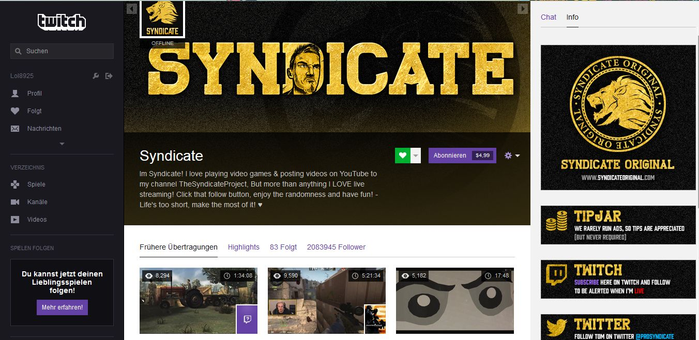

Die einen spielen um ihr Leben, die anderen schreien um ihr Leben: Spieler und Fans

3.1 Spielend zum "Vergnügen"
1a) Welche Motivation steckt hinter dem Spielen von Computerspielen?
Was dem einen sein Fussball ist, ist dem anderen die Spiegelreflexkamera oder aber eben der Computer. Dass E-Sport weit mehr als nur ein Hobby, ein netter Zeitvertreib ist, soll im Laufe der Analyse noch herausgestellt werden. Dafür soll aber erst geklärt werden, was überhaupt Gründe dafür sind beziehungsweise sein könnten, Computerspiele zu spielen. Dafür möchte ich mich zum Einstieg auf zwei Forschungsarbeiten stützen. Zum einen auf die Monographie Computerspielen als Handlung. Dimensionen und Determinanten des Erlebens interaktiver Unterhaltungsangebote (2010) von Christoph Klimmt. Klimmt ist Professor für Medien- und Kommunikattionswissenschaft. In seiner Forschung beschäftigt er sich schon seit Jahren schwerpunktmäßig mit Computerspielen (Bsp.: Klimmt, C. (2009): The stereotyped, threatening outgroup: Shooter video games and anti-Arabic attitudes, Klimmt, C. (2015). Du bist tot, nur noch zwei Leben übrig! Sterben im Computerspiel). Sein Fokus liegt dabei auf: unterhaltsamer Mediengebrauch, Medienrezeption und Medienwirkungen, Neue Medien- und Kommunikationstechnologien. Zum anderen werde ich mich auf die Arbeit Wie Computerspiele ins Spiel kommen. Theorien und Modelle zur Nutzung und Wirkung visueller Spielwelten (2011) von Jürgen Fritz stützen. Fritz ist Professor am Institut für Medienforschung und Medienpädagogik an der Fachhochschule Köln.
Mittlerweile gibt es eine unüberschaubare Menge und Vielfalt an Computer- und Videospielen. Alleine für die Xbox 360 sind derzeit (Stand Juni 2015) 1.741 Spiele auf dem Markt. Auf der Internet-Vertriebsplattform Steam, die Computerspiele und Software vertreibt, sind es momentan rund 5.623 Spiele. Und darunter werden nichtmals alle aktuell erhältlichen Computerspiele aufgeführt, weil nicht alle auf Steam verfügbar sind. Diese Zahlen sind nicht in Stein gemeißelt und sollen auch nur als Indikator dienen. Sie machen aber deutlich, dass es nicht das eine Computerspiel gibt, anhand dessen man ablesen könnte, was Gründe für das Spielen von Computerspielen sind. Wie schon in Kapitel zwei beschrieben, gibt es die unterschiedlichsten Arten von Computerspielen. Die einen spielt man nur alleine, die anderen nur in der Gruppe. Die einen werden gegeneinander ausgetragen, die anderen haben das Miteinander im Fokus. Wieder andere sind auf Strategie ausgelegt, während bei anderen das impulsive Handeln im Vordergrund steht. Es dürfte also ebenso schwierig sein, das eine Motiv für Computerspielen herauszufiltern. Viel mehr müsste man für jedes einzelne Spiel oder Spielgenre und seine Szene die jeweiligen Motive erarbeiten und im weiteren, Vergleiche zu anderen Spielen vornehmen. Da dieses Unterfangen Ressourcen benötigt, die in dieser Arbeit nicht geleistet werden können, soll es vorrangig darum gehen, einige Motive vorzustellen, die man im Allgemeinen auf das Spielen von Computerspielen übertragen kann.
Computerspiele, die aktuell auf dem Markt sind

1a) Welche Motivation steckt hinter dem Spielen von Computerspielen
Klimmt beschreibt das Computerspiel in seiner Arbeit vor allem als Unterhaltungsmedium. In seiner Forschung erarbeitet er Mechanismen, die beim Computerspielen greifen, damit der Spieler sich "unterhalten" fühlt. Diese sind: das Selbstwirksamkeitserleben, Spannung und Lösen und die simulierte Lebenserfahrung.
Erster Mechanismus: Selbstwirksamkeitserleben
Dieses Selbstwirksamkeitserleben wird von Klimmt in Bezug auf Computerspiele als Eingabe-Ausgabe-Schleife bezeichnet. Damit ist gemeint, dass auf jede Handlung des Spielers eine unmittelbare Reaktion erfolgt: "Die Wirkung jeder einzelnen Handlung ist eindeutig wahrnehmbar. Überdauert diese Wahrnehmung mehrere (bzw. viele) Handlungen (im Computerspiel: I-/O-Loops), so ist die Möglichkeit gegeben, dass sie das Subjekt in einen spezifischen Erlebenszustand (state) versetzt, nämlich die fortlaufende Wahrnehmung eigener direkt-kausaler Einflussnahme auf das Geschehen" (Klimmt 2010: 77). Hier wird auf die psychologische Handlungs- und Lerntehorie verwiesen, die davon ausgeht, dass der Zustand des Selbstwirksamkeitserlebens die Erwartung beinhaltet, in einer gegebenen Situation erfolgreich handeln zu können. Klimmt spricht davon, dass eine Form von Erfolgserlebnis im Spielverlauf vorliegen müsse, damit der Spieler die Bewältigung einer Situation überhaupt erkennen könne (vgl. ebd. 2010: 77). Allerdings ist Erfolg alleine keine notwendige Prämisse für Wirksamkeit. Nicht jedes Spiel ist von Erfolg gekrönt, muss deswegen aber nicht weniger "Spaß" machen oder Unterhaltung bringen.
Zweiter Mechanismus: Spannung und Lösung
Echtzeit-Strategiespiele wie Starcraft stellen den Spieler in jeder Episode vor eine Aufgabe, ein Problem oder/und eine Herausforderung. Laut Klimmt, sei dabei in den letzten Jahren zu beobachten gewesen, dass solche Spiele an Komplexität verloren (d.h. die Schlachten werden auf kleineren Landkarten mit weniger Einheiten ausgetragen), dafür aber an Geschwindigkeit zugelegt hätten (d.h. die Produktion und Bewegung eigener und feindlicher Einheiten gehe nun geradezu rasant vonstatten) (vgl. ebd. 2010: 82). Dadurch ergibt sich ein ständiges Wechselspiel zwischen Spannung und Lösung. Spannung, weil der Spieler für jede Episode, die er spielt, das Handlungsziel verfolgt, die ihm gestellte Aufgabe erfolgreich zu bewältigen und lösen. Lösung, wenn die Aufgaben gemeistert werden konnten: "Die Auflösung des Spannungzustandes kann also am Ende einer Computerspiel-Episode im Fall einer erfolgreichen Aufgabenbewältigung in extrem positive Erlebensformen münden oder aber im Fall eines Misserfolges noch stärkere negative Erlebensweisen als die vorangegangene Spannung selbst nach sich ziehn" (ebd. 2010: 87). Nach dieser Logik empfindet der Spieler demnach am meisten Spannung, wenn eine hohe Unsicherheit über den Ausgang einer Spielhandlung, Episode oder den Spielverlauf vorliegt.
Dritter Mechanismus: Simulierte Lebenserfahrung
Dieser Mechanismus beschreibt zum einen, wie Computerspiele typische Handlungsmuster oder Rollenverteilungen nutzen, um eine interaktive Lebensweltsimulation zu erschaffen, zum anderen, wie sie als Entlastung und Lebensbewältigung fungieren. Dem Spieler wird eine Rolle zugeordnet, mit der er sich entweder aus seiner Lebenserfahrung identifizieren kann oder aber eine Simulation, die ihm die Möglichkeit gibt, eine Handlungsrolle zu übernehmen, die ihn quasi in eine neue "Haut" schlüpfen lässt: "In diesen simulierten Lebenserfahrungen besteht der allgemeintätigkeitsbezogene Mechanismus des Unterhaltungserlebens durch Computerspielen" (ebd. 2010: 99). In der Medienpsychologie und Kommunikationswissenschaft wird diese Motiv als Eskapismus (Lehnwort echappieren: >>sich davonmachen<<) bezeichnet. Bildungssprachlich wird dieser Begriff oft negativ konnotiert. Medienpsychologisch ist er weniger negativ behaftet und gilt als wichtiges Motiv der Mediennutzung. Der Rezepient wird hier nicht als passiver Reizempfänger nach dem Stimulus-Response-Modell verstanden. Viel mehr sucht sich der Rezipient oder im Falle von Computerspielen der Spieler, seine Medienangebot gezielt/selektiv aus (Uses-and-Gratifications-Ansatz). Klimmt weist darauf hin, dass das Computerspiel komplexe narrative Strukturen bietet, die die "Flucht" aus der Alltagswelt ansprechend gestalteten. Interaktivität sorge für eine große Nähe zum simulierten Lebensbereich, teil-autonome Elemente für eine Bindung des Spielers an dessen Rolle (Freiheiten und Zwänge werden abgebildet) (vgl. ebd. 2010: 99f). Trotzdem müssen all diese Faktoren nicht gleichsam ausgeprägt sein oder vorliegen: "[...], Computerspiele müssen die [...] beschriebenen Potenziale zur Handlungsrollensimulation längst nicht ausschöpfen, um unterhaltsam und attraktiv zu sein" (vgl. 2010: 102). Siehe einfach gestrickte Rollenspiele, die mit Stereotypen operieren.
Ähnlich wie Klimmt geht auch Fritz davon aus, dass ein Hauptmotiv für das Spielen von Computerspielen in seinem Unterhaltungswert liegt. Er spricht von der Erkenntnis, dass sich Spieler zu "guten Gefühlen" verhelfen wollen. Spezifischer: gefühle wie Erfolg und Kompetenz (vgl. Fritz 2011: 29). Was Klimmt als Mechanismus bezeichnet, beschreibt Fritz als Prozesse der Spielemotivation. Langeweile, Ablenkung, Stressabbau und der unbewusste Wunsch erfolgreich zu sein, sieht er als primäre Motivationsquelle für das Spielen von Computerspielen. Daraüber hinaus sei die Wahl des Spieles abhängig von primären Aufforderungsreizen, die an das jeweilige Spiel gestellt würden: bekannte Motive, Themen und Inhalte, ansprechende Grafik, guter Sound und gelungene Animation (vgl. ebd. 2011: 37-39). Neben primären Motivationquellen müssten auch primäre Spielhandlungen vorliegen. Fritz kategorisiert diese wie folgt: Spielhandlung als "Testphase", die der Spieler vor der "eigentlichen" Auseinandersetzung mit dem Spiel absolviert (weiter Spielen ja oder nein). Daraus folgt im weiteren Verlauf die sekundäre Spielhandlung (sich anstrengen, konzentrieren). Aus dieser Kombination von primären Motivationsquellen, primärer Spielhandlung, die in einer sekundären Spielhandlung resultiert (resultieren kann), ergibt sich für Fritz ein zentrales Motiv von Computerspielen: Erfolg haben, siegen, ein Gefühl von Kompetenz haben und so das Spiel unter seine eigene Kontrolle bringen. Gerade im Mehrspielermodus ist darüber hinaus das sozial-emotionale Motiv der Geselligkeit (mit anderen Spaß haben) von hoher Bedeutung (vgl. ebd 2011: 37-39): "Numerous games and gaming platforms faciliate in-game social interactions, such as playing with others online or in-person, and it is these social aspects to gaming that many find its most appealing feature" (Crawford/Rutter 2007: 280).
Ergänzend zu dieser theoretischen Grundlage, bin ich selber ins Feld gegangen und habe einen Fragebogen erstellt und Daten erhoben. Konkret habe ich Personen befragt, die zumindest ein ausgeprägteres Interesse an Computerspielen hegen als jemand, der sich gar nicht dafür interessiert oder in Kontakt mit dieser Szene steht. Insgesamt wurden so 11 Personen befragt. 7 davon sind männlich, 4 davon weiblich. Die Altersspanne liegt zwischen 18 und 30 Jahren. Weitere Informationen zum Hintergrund der Befragten sind nicht erhoben worden, da die Auswertung des Fragebogens als Ergänzung zur Theorie gesehen wird. Zudem konnten in der Auswertung keine signifikanten Unterschiede ausgemacht werden, die darauf hingedeutet hätten, dass konkret das Alter oder das Geschlecht einen Einfluss auf die gemachten Antworten hat,. Daher wurde das Datenkorpus als gesamtes gefasst und ausgewertet.
Der Fragenkatalog gestaltete sich dabei wie folgt:
-
Warum spielst du Computerspiele (oder Konsolenspiele) und welche?
- Wie oft spielst du Computerspiele (täglich, mehrmals die Woche etc.)?
- Würdest du dich als Fan von Computerspielen bezeichnen und wenn ja, was macht ein Fan für dich aus?
- Wie äußern sich (deine) "Fanaktivitäten" in diesem Bereich?
- Wenn du E-Sport verfolgst, was ist es, was dich am meisten daran interessiert? Wenn nicht, kannst du erklären warum?
- Verfolgst du neben E-Sport auch andere Sportarten? Wenn ja, welche?
Fragebögen
1a) Welche Motivation steckt hinter dem Spielen von Computerspielen
Wie anhand der Fragen deutlich wird, ist der Fragebogen eher allgemein gehalten und bezieht sich sowohl auf Computerspiele im Allgemeinen, auf Fandom und auf E-Sport. Die Fragen wurden bewusst offen gehalten, um den Teilnehmern die Chance zu geben, möglichst viel eigenen Input zu den Themenbereichen zu geben. Außerdem sollte es nicht nur rein um eine quantitative Auswertung gehen, sondern ebenfalls darum, ein tieferes Verständnis über die Motivation von Computerspielern und/oder Fans zu gelangen. Für die Beantwortung von Forschungsfrage 1a werde ich an dieser Stelle nur die Auswertung aus Frage 1 und 2 berücksichtigen
1.) Warum spielst du Computerspiele (oder Konsolenspiele) und welche?
2.) Wie oft spielst du Computerspiele? (täglich, wöchentlich etc.)
Bei einer ersten Bestandsaufnahme fällt zunächst auf, dass sich zwar viele Gemeinsamkeiten zwischen den Antworten finden lassen, dennoch aber vielfältige Angaben gemachten wurden. So hat die Mehrheit der Befragten auf Frage eins geantwortet, dass vor allem der Spaß am Spielen und Entspannung im Vordergrund stünde. Darüberhinaus sind unter anderem folgende Punkte aufgetaucht: "Wettkampfcharakter", "Faszination für cineastische Geschichten", "Lösen von kniffligen Rätseln", "Kunstfaktor", "in Verbindung bleiben mit Freunden, die weit weg wohnen" oder "Ersatz zum TV". Keiner der Teilnehmer hat nur eine Motivation für das Spielen von Computerspielen angegeben. Im Gegenteil, es wurden jedes Mal mindestens zwei Aspekte genannt. Dabei korrespondieren die Ergebnisse mit den vorab vorgestellten Motiven, die sich in der Theorie finden lassen (vgl. bsp. "Spannung und Lösung" und "social interaction"). Es gibt also nicht DIE eine Motivation, die dazu bewegt, Computerspiele zu spielen. Vielmehr liegen mehrere Motive zugrunde, die mal mehr, mal weniger gewichtig sind.
Bei Frage zwei ist auffällig, dass nur zwei Personen angegeben haben, dass sie täglich Computerspiele spielen. Alle anderen Befragten gaben an, dass sie Phasen hätten, wo sie täglich mehrere Stunden spielten, dann aber auch wieder Phasen hätten, wo sie Wochen oder Monate lang kein Spiel vor den PC locke. Als Grund hierfür gaben die meisten an, dass die Zeit, die man mit Computerspielen verbringe, immer von anderen Verpflichtungen abhänge. Hierrin liegt offensichtlich der entscheidende Unterschied zum ProGamer. Einen ProGamer zeichnet aus, dass er täglich seine eigene Fähigkeiten stärkt, verbessert und sein Spiel analysiert. Dieser Aspekt spielt bei "Casual Gamern" offensichtlich keine große Rolle. Bei einem ProGamer ist es genau andersherum: Computerspielen ist die Hauptverpflichtung. Welche Motivation ein ProGamer genau hat, soll nun in Forschungsfrage 2b vorgestellt werden.
3.2 "Spielend" zum Geld
1b) Welche Motivation steckt hinter dem professionellen Spiel?
Hinter dem Spielen von Computerspielen können also zunächst ganz "banale" Motive wie Spaß am Spielen oder Stressabbau stehen. Dass diese Gründe aber nicht mehr vollständig greifen, wenn man sich die E-Sport-Szene ansieht, soll im Folgenden deutlich gemacht werden.
Es macht einen großen Unterschied, ob man für sich alleine oder mit ein paar guten Freunden ein paar Stunden die Woche Computerspiele spielt oder aber jeden Tag der Woche - und zwar auf professioneller Ebene. Wenn das Computerspielen kein Hobby mehr ist, nicht mehr nur rein zum Vergnügen oder Zeitvertreib betrieben wird, sondern den Lebensunterhalt finanziert/finanzieren soll, dann spricht man von Pro-Gamern. Der Anteil an Gamern, die wiklich auf einem internationalen und professionellen Level spielen, ist dabei gering. Ähnlich wie YouTube-Stars, repräsentieren Pro-Gamer die Elite ihres Mitiers, die es geschafft hat, aus einem Hobby einen Beruf zu machen. Allerdings ist die Tendenz dennoch steigend. Wenn man sich allein das Ligensystem der ESL (Electronic Sports League) ansieht, sind momentan insgesamt vier Millionen Spieler registriert, davon stammt die Hälfte aus Deutschland. Im Gespräch mit der Welt gibt Ulrich Schulze, ESL-Vertreter, an, dass die breite Masse davon Hobbyspieler und Amateuer seien. Die Zahl der Profis, die vom täglichen Computerspielen leben könnten, schätzt Schulze mittlerweile aber auch schon auf "einige Tausend".
Davon unterschieden werden sollten vorab noch zwei andere "Formen": Spieler, die den Anspruch haben auf professioneller Ebene zu spielen, aber nicht das Können dafür besitzen und somit das Computerspielen nie zu ihrem Beruf machen können und Spieler, die aufgrund von Spielsucht ihr Leben komplett um Computerspiele bauen. Gerade der letzte Aspekt ist nicht immer leicht ausmachbar. Ab wann gilt man als spielsüchtig? Wenn man eine gewisse Anzahl an Stunden vor dem PC verbringt? Wenn man Realität und Fiktion nicht mehr voneinander unterscheiden kann? Diese Fragen sind für die die Beantwortung der Forschungsfrage 1b nicht relevant. Ich möchte nur darauf hinweisen, dass es diese Problematik in der Einordnung von verschiedenen "Spieler-Typen" gibt und geben kann.
In diesem Abschnitt soll es es rein um die Motivation von Spielern gehen, die sich bereits einen Namen im E-Sport-Bereich machen konnten und damit ihren Lebensunterhalt verdienen. Dabei möchte ich mich unter anderem auf die Dokumentation Free to Play beziehen. Hierbei handelt es sich um einen Dokumentarfilm, der 2014 veröffentlicht wurde. Die Story dreht sich um drei professionelle Dota-2-Spieler, die auf ihrem Weg zum Turnier The International begeleitet werden. Dabei werden auch Stimmen von Kommentatoren, anderen Gamern und den Familien der drei Protagonisten eingefangen. Gedreht wurde im Jahr 2011, als das Turnier auf der Gamescom in Köln erstmals ausgetragen wurde. Die Macher begleiteten dabei drei Teilnehmer: Benedict “HyHy” Lim aus Singapur, Clinton “Fear” Loomis aus den USA und Danil “Dendi” Ishutin aus der Ukraine. The International findet mittlerweile jährlich statt und bringt professionelle Spieler aus der Dota-2-Szene zusammen. Das Turnier wird vom amerikanischen Spieleentwickler Valve veranstaltet.
Free to Play
1b) Welche Motivation steckt hinter dem professionellen Spiel?
Benedict „HyHy“ Lim (Singapur)
Im Einspieler sagt Benedict, dass ProGamer ihr Land repräsentierten. Das verschaffe ihm Befriedigung und persönlichen Erfolg. Befriedigung und Erfolg, die er so bei nichts anderem spüre: "Gaming is simply the proudest thing in my life". Sein Mantra dabei lautet: "Work for your passion". Für E-Sport lässt er Unikurse sausen und verpasst sogar einige wichtige Prüfungen. Benedict ist bereit, diese Opfer zu erbringen, auch wenn er sich im klaren darüber ist, wie riskoreich es ist, eine Karriere als ProGamer anzustreben. Hier gerät besonders seine Familie in den Fokus, die seine Leidenschaft für Computerspiele nicht nachvollziehen kann und nicht unterstützt.
Danil "Dendi" Ishutin (Ukraine)
Bei Danil steht insbesondere das Motiv des "Vergessens" im Vordergrund. Sein Vater, der für ihn wie ein guter Freund ist, stirbt früh an Krebs. Computerspielen ist für Danil ein Mittel, um den schmerzhaften Verlust für einige Stunden zu vergessen: "I forget the pain. It's a distractor". Im Gegensatz zu Benedict's Familie, genießt Danil mittlerweile die volle Unterstützung seiner Familie. Damil wird als sehr ehrgeizig und ungeduldig beim Spielen dargstellt. Dabei ist er sehr risikobereit. Dennoch steht bei ihm auch der Spaß am Spiel im Fokus ("having fun") und den Gegner zu irritieren und zu fordern ("mind games").
Clinton „Fear“ Loomis
Clinton ist mittlerweile 27 Jahre (zum Zeitpunkt der Doku 23) alt und einer der erfolgreichsten und erfahrensten DOTA 2 Spieler der westlichen Welt. Er zeichnet sich durch seinen Willen, hart an sich arbeiten zu wollen, aus: "I take it seriously to do something good for my life". Im Gegensatz zu anderen Topspielern, machen Clinton nicht unbedingt seine spielerischen Fähigkeiten aus, aber sein großer Teamgeist und seine Fähigkeit, ein Team erfolgreich zu coachen. Hierhin sieht auch er selbst seine größte Motivation Computerspiele auf professioneller Ebene zu spielen: "It is the competitive passion that triggers me". Während der Dokumentation spielt immer wieder das Thema Alter eine Rolle. Die Obergrenze für die allermeisten ProGamer liegt bei 26-28 Jahren. Dann lassen die eigenen Fähigkeiten immer mehr nach (Reaktionszeit etc.). So stellt sich ebenso Clinton die Frage, was er tun kann/muss, um seine große Leidenschaft auf längere Sicht weiter verfolgen zu können.
Die Familien der ProGamer
Ein wichtiges Thema in der Dokumentation sind die Familien der ProGamer. Keiner der drei Protagonisten wird losgelöst von dieser betrachet. Fast schon tiefenpsychologisch werden Verknüpfungen zwischen familiären Rollenverteilungen und dem daraus resultierenden Einfluss auf die ProGamer hergestellt. Dabei werden unterschiedliche Haltungen repräsentiert: von Verständnis, über Skepsis, bis hin zu Ablehnung. Insbesondere Benedict sieht sich mit starker Ablehnung seiner Familie konfrontiert. Die Gründe sind naheliegend: Computerspielen ist kein ernstzunehmendes Lebensziel. Höchste Priorität sollte die akademische Ausbildung haben. Seine Familie ist nicht schüchtern, ihre Bedenken direkt an die Kamera und damit den Zuschauer zu richten. Sie macht sich über Benedict lustig, trizt ihn immer wieder mit der Frage, was er mit seinem Leben machen ("You wanna play computer games? Really? Computer games?!") wolle und macht deutlich, dass Benedict die Familie großem Stress aussetze: "Gaming will by your death on day". Später kommt sein Vater zu Wort, der die E-Sport-Karriere seines Sohnes als "disappointment" bezeichnet und angibt, dass er selber nie studiert hätte, was er heute bereue. Seinem Sohn solle es besser gehen. In diesem streng hierarchischen Gefüge liegen klare Rollenmuster vor: Die Eltern, die hart für ihre Zukunft und ihren Sohn gearbeitet haben, erwarten ganz bestimmte Dinge von ihm. Das er diese nicht erfüllt bzw. nicht erfüllen will, wird als Schmach für die Familie angesehen. Sein Erfolg, aber auch sein Versagen, fällt in ihren Augen unmittelbar auf sie zurück.
Dem entgegen muss Danil nicht mehr um die Gunst seiner Familie kämpfen. Er selbst gibt an, in ärmlichen Verhältnissen aufgewachsen zu sein. Dennoch verbringt er eine behütete Kindheit. Er lernt Klavier, der Vater geht regelmäßig mit ihm Angeln. Erst als der Vater stirbt, wendet sich Danil intensiv dem Computerspielen zu: "Computer games for me was everything". Zu Beginn versucht die Familie (Mutter und zwei Geschwister) alles, um ihn zu stoppen: Sie verstecken sogar Maus und Tastatur. Danil findet sie jedoch immer wieder. Die Mutter möchte sich irgendwann nicht mehr nur gegen das "Hobby" ihres Sohnes sperren sondern es verstehen: "I wanted to give him a choice". Im Laufe der Interviews ziehen Mutter und Geschwister immer mehr Parallelen zwischen Danils Vergangenheit und seinen heutigen Fähigkten. Als kleiner Junge spielt er Klavier. Die Mutter ist überzeugt, dass ihm seine hierdurch antrainierte Fingerfertigkeit beim Computerspielen zu Gute kommt. Außerdem geht er schon früh mit seinem Vater angeln, kann stundenlang geduldig auf das Wasser blicken, um den richtigen Moment abzupassen. Auch hier ist die Familie überzeugt: Diese Fähigkeiten bündeln sich in seinem Computerspiel und sind teils für seinen Erfolg verantwortlich.
Ähnlich wie bei Benedict, sperrt sich ebenfalls die Familie von Clinton gegen dessen E-Sport-Pläne. Die Mutter bezeichnet sich am Anfang des Interviews als "typical parent" und beschreibt, wie viele Sorgen sie sich zu Beginn um ihren Sohn gemacht hat: " You don't have any history - like with other traditional sports - to look at". Besonders die Ungewissheit, ob Clinton mit dem Spielen von Computerspielen eine sichere Zukunft aufbauen kann, macht ihr Angst und Sorge. Später sagt Clinton, dass das schwierigste während all der Jahre als Gamer und schließlich ProGamer war, seine Familie von seiner Spielerkarriere zu überzeugen. Hier geht es um Zuspruch und Anerkennung. Entscheidend für seine charakterliche Entwicklung, sieht Clinton das Verhältnis zu seinem Vater. Der verlässt die Familie, ohne je wieder Kontakt zu ihr aufzunehmen, als Clinton noch ein Kind ist. Dieses Ereignis prägt ihn, nach eigenen Aussagen, nachhaltig. Weil sein Vater ihn im Stich ließ, bemüht sich Clinton umso mehr, die Vaterfigur für sein Team zu übernehmen. Seine Teamkollegen zollen ihm dafür im Interview viel Resepkt, geben an, dass sie ohne ihn nicht so weit gekommen wären ("He's my mentor, my "dota-brother""). Mittlerweile ist die eigene Mutter Clinton's größtes Vorbild. Als alleinerziehende Mutter geht sie zur Universität, wird Anwältin. Die Bestätigung durch ihre Anerkennung ist Clinton sehr wichtig. Eine der Schlusseinstellungen zeigt Mutter und Sohn im Wohnzimmer sitzend, während die Mutter mit einer Kamera vor dem Fernseher sitzt und ihren Sohn während des Dota 2 Tournaments abfilmt. Nach Jahren der Zweifel und Unstimmigkeiten, erlangt er schließlich den "Segen" seiner Mutter.
Man kann davon ausgehen, dass die Geschichten der drei Protagonisten ganz bewusst so dargestellt/konstruiert wurden, so dass die jeweiligen Familiengeschichten eine bestimmte Haltung gegenüber E-Sport demonstrieren und auch repräsentieren. Die Familienverhältnisse so zu erzählen, macht den Inhalt aber nicht weniger realitätsnah. Mittlerweile gibt es sogar auf Webseiten wie spieleratgeber-nrw Tipps für Eltern, deren Kinder E-Sporler werden wollen. Clinton, Danil und Benedict sprechen und stehen dabei für nur eine von vielen Haltungen. Durch die Dokumentation wird besonders deutlich gemacht, dass die Skepsis gegenüber der E-Sport-Szene daher rührt, dass es sich noch um ein wenig bekanntes und akzeptiertes Phänomen handelt - gerade in der älteren Generation. Allerdings wird herausgestellt, dass diese Ablehnung sehr kulturspezifisch sein kann. Asien - insbesondere Südkorea und China - werden als Beispiele dafür genannt, dass E-Sport nicht überall nur als Nischenprodukt wahrgenommen und verkauft wird: "[Asia] They take it much more seriously". An dieser Stelle möchte ich nicht weiter auf die asiatischen Teams eingehen, da dieser Aspekt eingehend untersucht wird, wenn es in der Makroebene um die Transkulturalität von E-Sport gehen wird. An dieser Stelle sollte nur angemerkt werden, dass die Dokumentation darauf hinweist, dass E-Sport kulturell unterschiedlich wahrgenommen wird.
Welche Motive stellt Free to Play heraus?
Zusammenfassend kann man sagen, dass - neben Spaß und Ablenkung - weitaus mehr Motive relevant sind, spielt man auf einem professionellem Level E-Sport. Besonders, wenn die Spieler davon sprechen, dass sie ihr Land repräsentieren wollen. Hier geht es nicht mehr nur um das Individuum Spieler, sondern um die Folgen, die Erfolg und Misserfolg für Teamkollegen, Familie und auf der höchsten Ebene, für das eigenen Land bedeuten. Dieses Motiv kann unter Nationalstolz gefasst werden - mehr oder weniger stark ausgeprägt. Darüber hinaus scheint es Spieler zu geben, - zumindest in der Doku - die Erfahrungen aus Vergangenheit auf ihr Spielverhalten projezieren und für ihr Interesse am Computerspielen "verantwortlich" machen (Vater verlässt die Familie -> starker Wunsch, selbst Vaterfigur zu werden, die im eigenen Leben gefehlt hat. Andere Hobbies, wie Angeln oder Klavier spielen, helfen beim Computerspielen und fördern diese). Ein weiterer Apsekt ist das Zusammengehörigkeitsgefühl, das die Teams (Clans) zusammenhält. Tammy Tang, selbst professionelle E-Sportlerin, sagt während der Dokumentation, dass die Mitspieler und Teams wie eine zweite Familie wären. Hier finden sich die zusammen, die dieselbe Leidenschaft teilen und für diese auch Verständnis haben. Das hat man so zwar auch im kleineren Freundeskreis, auf großen Turnieren, wo Spieler aus aller Welt zusammenkommen, dürfte dieses Zusammengehörigkeitsgefühl noch einmal eine andere Qualität bekommen. Ein letztes und nicht zu verachtendes Motiv, um professioneller E-Sportler zu werden, ist der wirtschaftliche Erfolg, der bei Siegen winkt. Die Preisgelder werden immer höher und auch die interviewten Familien geben zu, dass mit dem finanziellen Erfolg die Zustimmung für E-Sport gewachsen sei. Wenn plötzlich Preisgelder in Millonenhöhe vergeben werden, horchen selbst die letzten Skeptiker auf. Rein materiell betrachtet, sind Erfolg und Misserfolg im E-Sport also stark mit finanziellem und wirtschaftlichem Erfolg verknüpft.
3.2.1 Studentin Steffie über E-Sport
Für Steffie (23) ist das Preisgeld kein Grund, um professionell E-Sport zu spielen. Die Studentin der Medienswissenschaft und Medienpraxis an der Uni Bayreuth spielt seit fünf Jahren League of Legends. Im letzten Wintersemester schlug ein Dozent in der Einführungsveranstaltung für die Erstsemester vor, dass die Studierenden ein eigenes E-Sport-Team gründen sollten. Steffie fand die Idee gut und schloss sich dem Projekt an. Ziel des Bayreuther Projektes ist es, eine deutschlandweite Uni-E-Sport-Liga aufzubauen und zu etablieren. Dafür nehmen die Projektteilnehmer seit dem letzten Jahr Kontakt zu deutschen Universitäten auf und Suchen nach Sponsoren für ihre E-Sport Teams. Mittlerweile wären sie sogar mit einem Studenten im Gespräch, der an der Sporthochschule Köln ein E-Sport-Team etablieren möchte: "Das wäre natürlich der Hammer, wenn sich eine Sporthochschule an dem Aufbau der Liga beteiligen würde. Wenn man so eine etablierte Sportinstitution dazu kriegen würde, E-Sport in sein Programm mit aufzunehmen, ist der Schritt zur Anerkennung als Sportart ja nicht mehr weit", so Steffie in Skype-Interview, das wir am 09.09.2015 geführt haben.
Momentan ist Steffie für die Projektleitung Spiel und Organisation zuständig und bietet freitags ein Training für Nachwuchsspieler an. Sie selber sieht sich nicht als ProGamerin an, obwohl ihr gerade die Wettkampfsituation beim E-Sport gefällt: "Das Metaspiel ändert sich ständig. Daher muss man sich auch immer wieder auf's neue beweisen. Das ist sehr reizvoll. Ich habe aber gemerkt, dass dieses regelmäßige Trainieren und die ständige Beschäftigung mit E-Sport, mir ein bisschen den Spaß am Spiel genommen hat. Wenn man permanet spielt und permanet versucht, besser zu werden, steht man auch permanent unter Stress und Druck".
Auf die Frage, was einen ProGamer ausmache, kann sie keine eindeutige Antwort geben: "Eine klare Abgrenzung finde ich da schwierig, eben weil es im E-Sport noch an Reglements fehlt, die einen Spieler klar als ProGamer einordnen und kategorisieren. Ich würde aber sagen, dass Regelmäßigkeit eine Rolle spielt. Also dass man, wie bei jedem anderen Sport auch, in regelmäßigen Abständen seine Fähigkeiten trainiert und weiter ausbaut. Hierin steckt meines Erachtens ein weiteres Motiv: Man spielt nicht nur zum Spaß, sondern will aus seinen Fehlern lernen und immer besser werden. Dafür analysiert man sein Spiel, verbessert seine Skills und Mechanics". Es gibt demnach mehrere Merkmale, die einen ProGamer von einem "Casual Gamer" unterscheiden. Letztlich ist wohl das sicherste Indiz, ob ein Spieler in einem ProTeam spielt oder nicht.
Die Motivation, die hinter dem Spielen von Computerspielen steckt und die Motivation, die das professionelle Spielen ausmachen, sind nicht identisch. Der größte Unterschied liegt wohl darin, dass Casual Gamer zum Vergnügen spielen. ProGamer hingegen nehmen das Spiel um ein vielfaches ernster. Der Anspruch an das Spiel und das eigene Können sind zudem viel höher.
3.3 Populäre Spiele
1c) Welche Spielmöglichkeiten gibt es?
Da nun verschiedene Spielmotivationen herausgearbeitet worden sind, soll im nächsten Schritt eine kurze Beschreibung von den aktuell am meisten - auf Wettkampfebene - gespielten Computerspielen erfolgen. Wie schon zu Beginn herausgestellt, ist die E-Sport-Szene sehr heterogen. Um Struktur in die Analyse zu bekommen, werde ich mich in Beispielen immer wieder insbesondere auf die vier derzeit populärsten Spiele im E-Sport-Sektor beziehen:
1.) Dota 2
2.) League of Legends
3.) Star Craft II
4.) Counter Strike: Global Offensive
3.3.1 Dota 2
 Dota 2 wurde von Valve entwickelt. Der Firma, die auch das erste Dota Turnier (Gamescom 2011) veranstaltet hat. Dabei ist Dota 2 ein Multiplayer
Spiel, um genau zu sein eine Multiplayer Online Battle Arena (MOBA). MOBA wiederum,
ist ein Computerspiel-Genre und eine Unterkategorie der Echtzeit-Strategiespiele. Dota 2 ist der Nachfolger und
die Weiterentwicklung von Dota (Defense of the Ancients). Der Nachfolger kann seit 2013 kostenlos gedownloaded
und gespielt werden.
Dota 2 wurde von Valve entwickelt. Der Firma, die auch das erste Dota Turnier (Gamescom 2011) veranstaltet hat. Dabei ist Dota 2 ein Multiplayer
Spiel, um genau zu sein eine Multiplayer Online Battle Arena (MOBA). MOBA wiederum,
ist ein Computerspiel-Genre und eine Unterkategorie der Echtzeit-Strategiespiele. Dota 2 ist der Nachfolger und
die Weiterentwicklung von Dota (Defense of the Ancients). Der Nachfolger kann seit 2013 kostenlos gedownloaded
und gespielt werden.
Inhaltlich geht es in dem Spiel um Folgendes (Beschreibung von browsergames.de):
Im Prinzip handelt es sich bei Dota 2 um eine Mischung aus Rollenspiel und Strategie mit einer großen Portion Action. In Dota 2 steuerst du einen Helden aus der Vogelperspektive, den du, ähnlich wie in anderen Genrevertretern, durch Levelaufstiege, Gegenstände und Fertigkeiten verstärken kannst. Du wirst nicht nur von vier Teamkameraden begleitet, sondern auch jeder Menge Kanonenfutter, den sogenannten Creeps. Mittels dieser illustren Truppe gilt es nun, die gegnerischen Ancients (heilige Bauwerke in der Basis jedes Teams) zu vernichten und dabei die eigenen zu verteidigen. Beide Fünfergruppen befinden sich also in der gleichen Ausgangslage. Skills und Teamwork entscheiden über Sieg und Niederlage einer Runde. Die Karten, auf denen sich die Gefechte abspielen, sind in der Regel symmetrisch aufgebaut und verfügen über mehrere von Türmen bewachte Wege, die jeweils zu den Ancients des anderen führen. Besiegst du eine dieser Wachen, so werden dir Erfahrungspunkte gut geschrieben und du kannst fallengelassenes Gold einsammeln. Im Vergleich zum Vorgänger hat sich die grundlegende Spielmechanik fast nicht verändert. Es wurde nur gehörig am Bedienkomfort geschraubt. Obwohl es sich bei Dota 2 um ein reines Mehrspielererlebnis handelt, hast du ebenso die Möglichkeit, in einem Übungsmodus für einzelne Spieler anzutreten.
Valve verzeichnete Ende des letzten Jahres einen persönlichen Rekord in Sachen Spielerzahlen: exakt 10.158.875 Spieler spielten Dota 2 alleine im Dezember 2014. Um ein Gefühl für diese Zahl zu bekommen: Griechenland hat rund 10 Millionen Einwohner. Die Website E-Sports Earnings liefert aktuelle Zahlen zu den populärsten Spielen der E-Sport-Szene. Die Zahlen zu Dota 2 machen dabei zum einen deutlich, dass die Höhe des Preisgeldes in nur wenigen Jahren (2011: 1.6 Millionen Dollar // 2015: 18.4 Millionen Dollar) um ein vielfaches gestiegen ist. Zum anderen, dass die aktuelle Rangliste von China und den USA dominiert wird.

Dota 2 Gamescom Trailer
3.3.2 League of Legends
League of Legends (kurz: LoL) wurde von Dota inspiriert und von Riot Games entwickelt. Erstmals auf den Markt kam das Spiel am 27. Oktober 2009. Genau wie bei Dota 2, ist auch League of Legends kostenlos download- und spielbar. Lediglich einige Zusatzinhalte sind kostenpflichtig (Die Finanzierung von E-Sport wird auf der Mesoebene genauer vorgstellt).
Die Wiki-Seite von League of Legends beschreibt den Inhalt des Spiels wie folgt:
Jeder Spieler schlüpft in die Rolle eines Beschwörers, der eine spezielle Einheit, den sogenannten Champion, steuert und so in das Geschehen eingreift. Klassische Spielrunden in League of Legends beruhen auf dem gleichen Prinzip wie Defense of the Ancients: Je zwei Teams aus drei oder fünf Spielern treten gegeneinander an. Ziel beider Teams ist es, ein feindliches Hauptgebäude, den Nexus, zu zerstören und damit das Spiel zu gewinnen. Der Nexus wird dabei vom gegnerischen Team sowie von computergesteuerten Einheiten (so genannte Vasallen) und Türmen verteidigt.
Der alternative Spielmodus „Dominion“ hingegen setzt auf ein Regelwerk, das sich eher an Spielen der Battlefield-Reihe orientiert. Beide Teams beginnen mit einer bestimmten Menge an Punkten (Stabilität ihrer Nexus), die abnehmen, wenn der Gegner mehr Kontrollpunkte als das eigene Team beherrscht oder einen Champion des Teams tötet. Das Team, das zuerst keine Punkte mehr besitzt, verliert. Wie auch beim klassischen Spielmodus werden hier ebenfalls Vasallen entsandt, wobei diese jedoch eine untergeordnetere Rolle spielen.
Ein Spiel dauert je nach Spielmodus, Karte und Spieleranzahl im Regelfall etwa 15 bis 60 Minuten, wobei es jedoch auch möglich ist, eine Partie vorzeitig durch Kapitulation zu beenden. Dieser müssen mindestens 70% der Spieler des betroffenen Teams zustimmen und auf der Karte Kluft der Beschwörer müssen mindestens 20 Minuten bzw. auf der Karte Gewundener Wald 15 Minuten vergangen sein.
Seit 2011 wird League of Legends auf E-Sport-Niveau gespielt. Die ersten World Championships wurde im Juni 2011 ausgetragen. Die Veranstaltung fand auf der Dreamhack in Schweden statt. Insgesamt gab es 100.000 US-Dollar an Preisgeldern. Im Gegensatz zu Dota 2 kann League of Legends mit mehr aktiven Spielern aufwarten. Auf der offiziellen Homepage von Riot Games geben die Entwickler an, dass im Schnitt 67 Millionen Spieler pro Monat am PC sitzen und LoL spielen.
Schaut man sich nun wieder die E-Sport Earnings an, so fällt auf, dass League of Legends weitaus weniger Preisgelder auschüttet als Dota 2, und seit drei Jahren ungefähr denselben Betrag ausschreibt (rund 2 Millionen Dollar). Am erfolgreichsten in den Welten von LoL ist Südkorea. Allein die aktuell vier - nach gewonnenem Preisgeld - erfolgreichsten Spieler stammen alle aus Südkorea. So ist es auch nicht verwunderlich, dass Südkorea ebenfalls im Ländervergelich die Spitze anführt. Allgemein scheint LoL mehr vom asiatischem Raum dominiert zu werden. Unter den Topspielern sind nur Spieler aus Asien (Südkorea und Taiwan). Selbes gibt für das Länderranking (Südkorea, China, Taiwan, Hong Kong), wobei auch hier die USA vertreten ist. Auf Platz sechs sogar Deutschland. Gefolgt von Kanada, Dänemark und Frankreich. Der Abstand zu Südkorea ist dennoch immens. Vergleicht man nur Deutschland und Südkorea, so zeigt sich eine Differenz (erspieltes Preisgeld gesamt) von 6.705,070 US Dollar.


League of Legends Trailer
3.3.3 Startcraft II

Starcraft II ist eine Computerspiel-Triologie, entwickelt vom US-amerikanischen Spielemacher Blizzard Entertainment. Genau wie Dota 2, ist auch Starcraft II eine Fortsetzung (Starcraft). Die Triologie besteht aus den Titel: Wings of Liberty, Heart of the Swarm und Legacy of the Void. Das Spiel gehört dem Genre Echtzeit-Strategiespiel an. Der erste Teil der Triologie wurde am 27. Juli 2010 auf den Markt gebracht. Der zweite folgte im Jahr 2013. Am dritten Teil wird aktuell noch gearbeitet (Die Betaphase von Legacy of the Void begann am 1. April 2015). Im Gegensatz zu Dota 2 und League of Legends, kann Starcraft II, neben dem Mehrspielermodus, auch alleine (Einzelspielermodus) gespielt werden.
Das Spielprinzip wird auf Wikipedia wie folgt beschrieben:
Im Mittelpunkt der StarCraft-II-Spieletrilogie stehen drei unterschiedliche Rassen: Terraner, Zerg und Protoss. Jede Rasse besitzt verschiedene Einheiten und Taktiken.
Um Gebäude oder Einheiten für den Kampf bauen zu können, braucht man zwei Ressourcen: Mineralien und Vespingas, wobei Mineralien immer, Vespingas nur für höher entwickelte Gebäude und Truppen benötigt wird. Mineralien kann man von Mineralienfeldern abbauen, während man Vespingas aus Vespin-Geysiren gewinnen kann, wofür spezielle Gebäude auf den Geysiren platziert werden müssen. Die Anzahl der Mineralienfelder und Vespin-Geysire sind pro Karte unterschiedlich, so sind mehr Mineralienfelder und Vespin-Geysire auf einer 4v4-Karte vorhanden als auf einer 1v1-Karte.
Zum Start der Partie besitzt man üblicherweise 8 Mineralienfelder und 2 Vespin-Geysire. Im weiteren Spielverlauf sollte man allerdings weitere Vorratsstätten von Mineralien und Vespingas abbauen und expandieren, um so mehr und bessere Einheiten und Gebäude bauen zu können. Diese Expansion muss ebenso beachtet werden wie die Kriegsführung mit der verfeindeten Partei.
Die StarCraft-II-Spieletrilogie wurde speziell für den E-Sport entwickelt. Außerhalb der integrierten Ladder werden weltweit regelmäßig Turniere mit Preisgeldern abgehalten. Ein interessanter Aspekt von Starcraft II ist das schon angesprochene Ladder-System. Das bedeutet: In der StarCraft-II-Trilogie kann man mit dem Mehrspielermodus über die Online-Spieleplattform Battle.net, die von Blizzard gestellt wird, Multiplayerpartien gegen andere Spieler bestreiten. Um sicherzustellen, dass Spieler immer gegen Spieler gleicher Spielstärke antreten, ist eine Ladder integriert, bei der die Spieler gemäß ihrer Spielstärke in verschiedene Ligen einsortiert werden. Die Ladder gelten jeweils für eine Region der Welt. Nur innerhalb dieser Region treten die Spieler in Ladder-Spielen gegeneinander an. Ich bezeichne diesen Aspekt daher als "interessant", weil er darauf hindeutet, dass es mit der Transkulturalität im E-Sport in manchen Bereich schwierig sein könnte. Ich vermute, dass diese Ligenstruktur zum einen aus ganz pragmatischen Gründen erfolgt ist: unterschiedliche Zeitzonen. Zum anderen kann man aber auch annehmen, dass das Spielniveau aufgrund verschiedenster Faktoren (Professionalisierung von E-Sport, Popularität von E-Sport etc.) unterschiedlich ist.
Dabei sind sind Ligen wie folgt eingteilt:
- Nordamerika und Lateinamerika
- Europa und Russland
- Korea und Taiwan
- Südostasien
- China
Zusätzlich zum Spiel wurden mittlerweile sogar Romane zum Spiel veröffentlicht: StarCraft II – Heaven’s Devils, StarCraft II – Teufelskerle, StarCraft II – Flashpoint, Starcraft II: War Stories - Das Projekt Blackstone.
Die Preisgelder, die für Starcraft II ausgeschrieben wurden, sind im Vergleich zu Dota 2 und League of Legends nicht hoch. Seit drei Jahren beläuft sich die Preissumme auf 250.000 US Dollar. Dabei wird das gesamte Feld von Südkorea dominiert. Schaut man sich das Ranking der aktuellen Topspieler auf E-Sports Earnings an, so taucht erst ab Platz 12 überhaupt eine andere Nationalität als Südkorea auf. Dementsprechend führt Südkorea auch das Länderranking an. Der Graben zum momentan Zweitplatzierten ist dabei immens: ganze 11.800,188 US Dollar Unterschied liegen dazwischen.
Wenn es auf der Makroebene um Transkulturalität und E-Sport geht, wird insbesondere ein Fokus auf Südkorea liegen. Dann werden auch Erklärungen dafür geliefert, warum Südkorea in manchen Spielebereichen so eine große Dominaz aufweist.


Starcraft II: Wings of Liberty Trailer
3.3.4 Counter Strike: Global Offensive

Unter den vier vorgstellten Spielen, ist Counter Strike das mit Abstand älteste. Das Spiel wurde im Jahr 1999 veröffentlicht und ist eine Modifikation des Ego-Shooters Half-Life. Counter Strike wurde besonders durch LAN-Partys und das Internet bekannt. Dabei ist das Spiel dem Genre der Online-Taktik-Shooter zuzuordnen. Erstellt wurde das Ego-Shooter-Spiel von einer von Minh Le und Jess Cliffe geleiteten Gruppe von Hobby-Entwicklern, deren Mitglieder heute zum Teil für das bereits vielfach erwähnte Unternehmen Valve arbeiten. Bis in das 21. Jahrhundert hinein, war Counter Strike das am meistgespielten Online-Actionspiel. Dasselbe traf auch auf E-Sport zu. Counter Strike dürfte selbst nicht Computerspiel-affinen durch den Diskurs der sogenannten "Ballerspiele" ein Begriff sein. So wurde im Zuge des Amoklaufs von Erfurt im medialen Diskurs sogar zur Debatte gestellt, ob Kriegsspiele wie Counter Strike für solche Taten verantwortlich gemacht werden sollten.
Inhaltlich ist das Spiel wesentlich leichter aufgebaut als die drei bereits beschriebenen Spiele (Wikipedia):
Inhalt des Spieles ist ein taktisch geprägter Kampf zwischen zwei Gruppen, den Terroristen („T“) und der Antiterroreinheit (engl. „Counter-Terrorists“, „CT“), einer polizeilichen Sondereinheit. Je nach Szenario erhalten die Teams verschiedene Aufträge, deren Erfüllung das jeweils gegnerische Team verhindern muss.
Durch Eliminierung der gegnerischen Spieler oder Erfüllung von Missionszielen erhält der einzelne Spieler Punkte sowie virtuelles Geld. Die Missionsziele sind meist entweder für die Antiterroreinheit das Befreien von Geiseln oder für die Terroristen das Legen einer Bombe (C4).[1] Für Abschüsse eigener Teammitglieder oder Geiseln werden dem jeweiligen Spieler Geld und Punkte abgezogen.
Das Spiel basiert auf einzelnen Runden. Die beiden Gruppen starten in zwei festgelegten Bereichen auf der Karte, den Spawn-Zonen. Jeder Spieler kann von seinem virtuellen Geldkonto zu Anfang jeder Spielrunde Waffen und sonstige Ausrüstung (Handgranaten, Schutzwesten, etc.) kaufen. Eine Runde endet gewöhnlich, wenn die Missionsziele erfüllt wurden, nach einem Zeitlimit von üblicherweise 5 Minuten oder wenn eines der Teams eliminiert wurde. Im Gegensatz zu Deathmatch-Spielen können Spieler, die während einer Runde abgeschossen wurden, erst wieder in der nächsten Runde mitspielen und sind bis dahin Zuschauer. Spieler, die die Runde überlebt haben, können ihre verbliebenen Waffen, Ausrüstungsgegenstände und Munition in der nächsten Runde weiterverwenden. Das Geld bleibt auch nach dem virtuellen Tod der Spielfigur erhalten und wird nur zurückgesetzt, wenn der Spieler beispielsweise das Team wechselt oder an einem neuen Match teilnimmt.
Das Preisgeld bewegt sich bei Counter Strike in derselben Höhe wie bei Star Craft II (250.000 US Dollar). Das ist von daher interessant, als dass Starcraft II ein wesentlich aktuelleres Spiel ist, das Counter Strike sowohl von seiner Handlung als auch seiner Graphik weit überlegen ist. Dennoch und trotz seines in die Jahre gekommenen "Looks", gehört Counter Strike immer noch zu den populärsten Computerspielen unserer Zeit. Wie bei Starcraft, setzt hier ein ganz bestimmtes Land die Standards: Nein, nicht Südkorea. Schweden. Die ersten neun Top-Spieler sind allesamt aus Schweden. Auffällig ist, dass sich weder unter den Top-Spielern, noch im Länderranking asiatische Teilnehmer finden lassen. Das Länderranking wird von Schweden angeführt. Dahinter folgen: Frankreich, die USA, Polen, Dänemark, die Ukraine, und Deutschland. Auch wenn es auf der Makroebene genau um diese Länderunterschiede gehen soll, kann zumindest schon jetzt festgestellt werden, dass keine pauschale Aussage für die gesamte E-Sport-Szene getroffen werden kann. Wie viel Geld in die Turniere fließt und welche Länder eine bestimmte Spiel-Szene prägen, ist augenscheinlich ebenfalls kulturspezifisch. Wobei man anhand der zuletzt dargstellten Grafiken sagen kann, dass insbesonder Nordamerika, Europa und Asien den E-Sport dominieren.


Counter Strike: Global Offensive
3.4 Fans von Computerspielen

Im letzten Paragraphen wurde eingehend untersucht, was Motive für das Spielen von Computerspielen sein könnten. Nun sind sich die Frage "Was sind Motive für das Spielen von Computerspielen?" und "Warum ist man Fan von Computerspielen?" auf den ersten Blick recht ähnlich. Spieler, die aktiv Computerspiele spielen, dürften sich oft wohl auch als "Fans" von Computerspielen bezeichnen. Nichtsdestotrotz gibt es nochmals einen Unterschied zwischen einem Spieler, der gerne Computerspiele spielt, darüber hinaus aber keinerlei Zeit mehr in Computerspiele investiert und einem Spieler oder einfach nur Fan, der sich Merchandise kauft, in Fan-Netzwerken unterwegs ist und im letzten Schritt auch E-Sport-Events beiwohnt. Im Folgenden soll zunächst der Begriff des Fan für diese Arbeit abgesteckt werden. Im weiteren wird es dann insbesondere darum gehen, Zusammenhänge und eventuelle Abgrenzungen zwischen dem Begriff Fan und dem Begriff Spieler zu treffen.
3.4.1 Was ist ein Fan?
Zunächst ist zu fragen, was einen Fan von einem "normalen" Rezipienten oder Zuschauer unterscheidet. Was macht ein Fan, das ihn als Fan "ausweist"? Ist man nur dann Fan, wenn man seine Leidenschaft für sein Fanobjekt öffentlich macht oder ist man gleichermaßen Fan, wenn man seine geheime Liebe - sagen wir - für Justin Bieber im Privaten zelebriert? Ist man Fan, wenn man seinem großen Idol auf der ganzen Welt hinterher reist oder ist man dann schon ein Stalker, ein Fanatiker? Roose gibt in seinem Sammelband Fans. Soziologische Perspektive an: "Explizite (Nominal) Definitionen von Fans sind bisher selten" (Roose 2010: 11). Die Forschung kann demnach ebenfalls keine klare Definition bieten. Der Duden beschreibt den Begriff Fan wie folgt: "Ein Fan ist ein begeisterter Anhänger, eine begeisterte Anhängerin von jemandem, etwas"''. Im Fokus steht hier also insbesondere die Emotionalität (vgl. ebd. 2010: 12), mit der ein Fan sein Fanobjekt betrachtet. Zumindest für die Etymologie des Begriffes mag diese Zuweisung zutreffen. "Fan" ist die Kurzform des englischen „fanatic“, also "Fanatiker". Wobei der Begriff wesentlich negativer konnotiert ist als der Begriff Fan: "Auch wenn etymologische Wurzeln des Begriffs im Fanatismus liegen mögen, so hat er sich doch zumindest im deutschen Sprachraum soweit verselbstständigt, dass eine wertfreie Fassung des Terminus möglich und sinnvoll ist" (ebd. 2010: 12). Im schon angesprochenen Sammelband wird der Terminus wie folgt definiert:
"Menschen, die längerfristig eine leidenschaftliche Beziehung zu einem für sie externen, öffentlichen, entweder personalen, kollektiven, gegenständlichen oder abstrakten Fanobjekt haben und in die emotionale Beziehung zu diesem Objekt Zeit und/oder Geld investieren (angelehnt an Schäfer/Roose 2005: 49) (ebd. 2010: 13)."
Diese Definition ist bewusst sehr offen und allgemein gehalten, weil beispielsweise nicht genau gesagt werden kann, wie lange eine "längerfristige Beziehung" zu einem Fanobjekt sein muss, damit diese Definition greift oder ein Fan als Fan charaktersiert werden kann. Die Autoren sind sich nur einig, dass beispielsweise ein einmaliger Konzertbesuche, der kurfristige Freude auslöst, anders zu bewerten ist, als regelmäßige Konzertbesuche. In seinem Aufsatz Doing being a fan im Web 2.0, kritisiert Klemm genau diese Vagheit: "So umfassend diese Definition ist, so vage bleibt notwendigerweise die konkrete Realisierung der genannten Parameter" (Klemm 2010: 5). Klemm weist weiter darauf hin, dass es nicht den einen Typus von Fan gibt. Vielmehr könne Fantum in gradueller Abstufung erfolgen, vom gelegentlichen „Teilzeitfan“ bis hin zum „Imitator“ oder „Stalker“ als pathologisches Extrem. Dabei werde innerhalb der Szenen auch immer wieder die Unterscheidung von „Fairweather-“ und „Die hard“-Fans, also Schönwetter-Fans und „harten“ Fans, thematisiert (vgl. ebd. 2010: 6). Außerdem spielt auch immer das Selbst- sowie das Fremdbild eine Rolle. Wo man sich selbst nicht als Fan bezeichnen würde, würden Außenstehende vielleicht schon längst den Begriff des Fans verwenden. Wo das Fan-Dasein anfängt und wo es aufhört, hängt demnach auch von eigenen Erfahrungswerten ab. Für diese Analyse möchte ich gar nicht versuchen, eine allgemeine Definfition für den Begriff Fan zu finden, die eh nur prototypisch sein kann.
3.4.2 Motivation von Fans: Computerspiele
2a) Welche Motivation hat ein Fan von Computerspielen?
Schon als es um den Begriff der Populären Kultur ging, wurde festgestellt, dass Spielfiguren wie Pacman längst Kultstatus erreicht haben. So kann man auch ein Fan der Figuren Super Mario, Yoshi oder Zelda sein, ohne selber diese Spiele zu spielen. Computerspiele haben über die Jahrzehnte eine Fülle an popkulturellen Gütern erzeugt, die mitlerweile losgelöst vom Spiel selber eine eigenständige Rezeption und auch Fankultur genießen. So gelangt man wieder zum Fanbegriff selbst. Ist man nur als Fan zu bezeichnen, wenn man aktiv Computerspiele spielt oder ebenfalls schon, wenn man computerspielbezogene "Güter" konsumiert und mag? Und wo genau setzt man die Grenzen zwischen Fan und Spieler? Eine eindeutige Beantwortung dieser Fragen ist nicht möglich und würde in einer endlosen Debatte darum münden, welcher Fanbegriff nun der "zutreffendere" ist. Deswegen soll an dieser Stelle abermals auf die Auswertungen des Fragebogen zurückgegriffen werden.
Für Forschungsfrage 2b ist insbesondere die Auswertung von Frage 3 (Würdest du dich als Fan von Computerspielen bezeichnen und wenn ja, was macht ein Fan für dich aus?) und 4 (Wie äußern sich (deine) "Fanaktivitäten"?) von Bedeutung. Bei beiden Fragen haben die Teilnehmer ähnliche Angaben gemacht und teilweise in ihrer eigenen Definition sehr differenziert argumentiert. Die meisten sagten zu Frage 3, dass ein Fan detailliertes Wissen und starkes Interesse am Fanobjekt haben müsste, um als Fan bezeichnet werden zu können. Außerdem wurde noch der Aspekt "hohe emotionale Bindung" erwähnt. Zwei Teilnehmer schrieben zudem, dass ein Fan für sie nicht unbedingt jemand sein müsse, der auch aktiv Computerspiele spielt: "Für mich sind Fans einerseit die aktiven Spieler selbst, andererseit aber auch einfach Personen, die generell an diesem Medium interessiert sind". Weiterhin sprach ein Befragter davon, dass es verschiedene Ausprägungen davon gäbe, wie sich das Interesse am Fanobjekt äußern könnte. Hier unterschied er in "aktiv" und "passiv". Unter aktiv wurde bspw. die Teilnahme an Conventions und Fanforen verstanden, unter "passiv" die reine Beobachtung der Computerspiel-Szene. Die meisten der Interviewten sagten aus, dass sie sich selbst als Fan bezeichnen würden, da sie ein gesteigertes Interesse an der Computerspiel-Szene hätten. Drei Befragte würden sich selber nicht als Fan bezeichnen, obwohl einer von ihnen angab, dass er sich über Neuerscheinungen informiere und in Game Shops ginge. An dieser Stelle wird exemplarisch, was schon im vorherigen Kapitel angesprochen wurde: der Fanbegriff wird stark von Fremd- und Eigenzuschreibungen beeinflusst. Selbst wenn man sich selber nicht als Fan sieht, heißt das nicht, dass die Wahrnehmung von Außen damit konform gehen muss.
So unterschiedlich wie in dem Fragebogen der Fanbegriff aufgefasst wurde, so unterschiedlich wurden auch Fanaktivitäten bewertet. Während ein Teil schon das Verfolgen von neuesten Entwicklungen und Streams als Fanaktivität verstanden hat, gab ein anderer Teil an, dass sich Fanaktivitäten darin äußerten, dass man zu Conventions gehe, sich mit Freunden austausche und Merchandise kaufe.
Die Auswertung des Fragebogen unterstützt das, was Klemm zum Fanbegriff geschrieben hat. Auch im Zusammenhang mit Computerspielen kann man nicht von DEM einen Fanbegriff sprechen. Vielmehr müssen Abstufungen getroffen und berücksichtigt werden, dass sich der Fanbegriff je nach Perspektive verschieben kann. Für das hier erstellte Portfolio halte ich fest, dass ein Fan von Computerspielen sowohl jemand sein kann, der selber Computerspiele spielt, als auch jemand, der sich rein für Produkte aus der Szene interessiert. Darüber hinaus würde ich ebenfalls die gemachte Unterscheidung in aktiver und passiver Fan untersützen. So könnte man Fans innerhalb der Szene gezielter einordnen und kategorisieren. Zudem spreche ich mich dafür aus, keine strenge, begriffliche Einteilung zwischen Fan und Spieler vorzunehmen, da die Übergänge fließend sind. Hingegen erscheint mir eine begriffliche Trennung zwischen Fan und ProGamer sinnvoll, da ein ProGamer selbst auch zu einem Fanobjekt werden kann.
3.4.3 Motivation von Fans: E-Sport
2b) Welche Motivation hat ein Fan von E-Sport?
Ein Fan von E-Sport zu sein, kann zwei Leidenschaften miteinander verbinden: die Liebe zum Computerspiel und die Liebe für eine bestimmte Mannschaft. Ähnlich wie bei anderen Sportarten, muss ein Fan von E-Sport aber nicht aktiv selber spielen, um sein favorisiertes Team anzufeuern oder mit seinem Lieblingsspieler mitzufiebern. In vielerlei Hinsicht bietet die E-Sport-Szene dem Fan eine große Plattform, um sein Fantum zu zelebrieren - und das nicht nur virtuell, sondern auch in der realen Welt. So können sich Fans online auf Sozialen Medien formieren und austauschen und/oder Turniere verfolgen, aber auch live bei E-Sport-Veranstaltungen dabei sein, andere Fans treffen und ihre Teams hautnah miterleben. Die Motive scheinen also gar nicht so anders zu sein, als die, die einen Fan von anderen, "klassischen" Sportarten bewegen.
In seiner umfangreichen Monograhpie Die Faszination des Fußballspiels (1974), schrieb Soziologe Gerd Hortleders Folgendes: "Das Fußballspiel ist ein Plädoyer für das nicht Planbare, für Überraschung und Sensation, für Symbolik inmitten einer nüchternen Realität. Die Begeisterung für den Fußballsport spiegelt den Wunsch einer Gesellschaft nach Irrationalem wider oder nach Mythen, was nicht unbedingt das gleiche ist. Die Sehnsucht nach einem spannenden und schönen Fußballspiel ist, gemessen an dem, was in dieser Gesellschaft besser sein könnte, ein überflüssiger Traum, gewiß. Vielleicht gehört es zu jenem Überflüssigen, von dem Ortega y Gasset gesagt hat, es allein sei notwendig für den Menschen" (Hortleder 1974: 44). So sperrig diese Aussage ist, gerade der erste Abschnit trifft auch auf E-Sport zu. Jedes Match verläuft anders, egal, wie vorhersehbar der Ausgang sein mag. In einer Frequenz in der Doku Free to Play geht es um das Team Online Kingdom vom US-amerikanischen Spieler Clinton. Seinem noch sehr jungen Team werden vorab keine großen Chancen ausgerechnet. Am Ende der ersten Runde steht allerdings Online Kingdom als Gruppensieger an der Spitze. So sorgen die Spieler rund um Clinton schon am ersten Spieltag für eine Überraschung und auch eine kleine Sensation, weil sie die vorher favorisierten chinesischen Teams besiegt haben. E-Sport liefert genau das, was etablierte Großsportevents schon seit Jahrzehten ausmacht: das "Wir-Gefühl", die Spannung und Anspannung über Erfolg und Niederlage, die Identifikation mit Spielern und Mannschaften - und das alles im großen Stil.
Diese Beobachtung korrespondiert ebenfalls mit der Auswertung von Frage 5 des selbsterstellten Fragebogens (Wenn du E-Sport verfolgst, was ist es, was dich daran am meisten interessiert?). Die Befragten, die angegeben haben, dass sie sich für E-Sport interessieren, gaben folgende Gründe hierfür an: "Mit Spielern in Kontakt kommen", "Unterhaltungswert (gerade bei Streams)", "Interesse an spannenden Spielen", "Teamwork und Höchstleistungen", "Strategie und Entscheidungsfindung", "Wettkampfcharakter". Diese Motive sind nicht unähnlich zu dem, was auch ein Fan von anderen Großsportarten angeben würde. Nur der Aspekt "Mit Spielern in Kontakt treten" ist davon getrennt zu betrachten. Wie nämlich noch bei den Forschungsfragen 1d/2d herausgearbeitet werden soll, ist die Kommunikation gerade zwischen Spielern und Fans im E-Sport-Bereich viel unmittelbarer und leichter möglich, als es bei anderen Sportarten der Fall ist. Daher wurde dieser Aspekt wahrscheinlich überhaupt erst im Fragebogen erwähnt. Ein Befragter gab außerdem an, dass er die Szene verfolge, weil er teilweise aus Langeweile im Netz surfe und dann aus Gewohnheit quasi "automatisch" auf entsprechende E-Sport-Seiten gehe. Hier äußert sich ein interessanter Aspekt, der im Fragebogen zwar nur einmal aufgekommen ist, von dem ich aber vermute, dass ihn viele Spieler und Fans so unterstreichen würden: E-Sport ist ein Teil von Alltagskultur geworden.
An dieser Stelle möchte ich außerdem nochmals auf den Unterschied zwischen online und offline Tournaments aufmerksam machen. In einem seiner Blog-Einträge äußert sich E-Sport-Kommentator Vitalii "v1lat" Volochai negativ zu online Tournaments. Im Gegensatz zu E-Sport-Events, die live und offline stattfinden, was bedeutet, dass das Match an einem bestimmten Ort ausgetragen und von der Kamera und Zuschauern begeleitet wird, werden online events rein im Netz gespielt. Will der Zuschauer/Fan das Spiel mitverfolgen, schaltet er also einfach den Stream ein und sieht die Spieloberfläche eins zu eins so wie der Spieler selbst - keine Zuschauer, keine Interviews vor und nach den Partien. Genau das kritisiert Volochai: "Imagine Champions League Final between Real and Barcelona. Huge money at stake, possible contracts, teams are in their best shape, best commentators work in all languages, but… they play at training base, translation flows from one camera, no replays, no viewers at the stadium, no pre-match show, no award ceremony. But hypothetical Real wins 3-2 in this super-match and takes $15 millions. Interesting??? [...] I can answer for you – zero damns were given. Yes, there were viewers on stream. About 60k yesterday and today on RU-stream, and don’t forget about huge prize pools. But still, it’s not catchy. Just not interesting". Während diese Unterscheidung zum einen deutlich macht, dass nicht jedes E-Sport-Match, nicht jedes E-Sport-Turnier gleich ausgetragen wird, macht sie zum anderen klar, dass gerade offline-Events durch ihre Dynamik ("catchy"), die auch andere Großsportevents mit sich bringen, so attraktiv für die Fans wird.
Fans über E-Sport
3.5 Zugangsformen
2c) Welche Zugangsformen gibt es, um mit Computerspielen/E-Sport in Kontakt zu kommen?
Bei Forschungsfrage 2c soll es nun darum gehen herauszufinden, welche Zugangsmöglichkeiten Fans haben, um sich über Computerspiele bzw. E-Sport zu informieren, aber auch austauschen zu können. Demnach werden Plattformen vorgestellt, die eine erste Anlaufstelle für Informationen sein können und zum Austausch dienen - wobei die Übergänge fließend sein können. Dabei soll es zunächst nur darum gehen, die unterschiedlichen Zugangsmöglichkeiten vorzustellen und zu beschreiben. Bei Forschungsfragen 1d/2d werde ich mich dann spezifischer mit der Art der Kommunikation auf Plattformen, und unter/zwischen Spielern und Fans beschäftigen.
3.5.1 Informations- und Kommunikationsplattformen
Gaming-Magazine (online)
Gaming-Magazine beinhalten die aktuellsten News über die Gaming-Szene, sowie Bewertungen von neuen Games und neuer Hardware. Außerdem gibt es teilweise Tipps und Empfehlungen rund um andere technische Gerätschaften, wie PC-Hardware, Tablets, Smartphones etc. Der Themenschwerpunkt der Magazine ist unterschiedlich. Manche Magazine beschäftigen sich vorrangig oder ausschließlich nur mit der aktuellen Computer-, und oder Videospielszene, andere rein mit sogenannten Retro-Spielen. Hier werden nur klassische Spiele wie Super Mario, Pacman oder Tomb Raider thematisiert. Wieder andere widmen sich Spielen, die rein online zu erwerben und zu spielen sind. Dann gibt es noch die Magazine, die nur die E-Sport-Szene abdecken. Die meisten Online-Magazine bieten dem User die Möglichkeit, sich mit der Community (Forum) auszutauschen oder eigene Leserrezensionen zu Spielen zu verfassen. Somit beinhalten die Plattformen nicht nur Informationen, sondern ebenso die Möglichkeit des Austausches und der aktiven Mitgestaltung am Content. Einige der Online-Magazine laufen parallel zur Printausgabe (Siehe GamePro oder Game Star)
Beispiele für Online-Magazine (Gaming)
PcGames - News, Tests, Cheats und Videos zu Pc- und Konsolenspielen
Bei Online-Magazinen, die sich nur mit E-Sport befassen, ist die thematische Fokussierung spezifischer als bei Gaming-Magazinen. Hier geht es rein um die E-Sport-Szene. Es werden Infos über anstehende Turniere, Matches und sonstige E-Sport-Events gegeben. Ansonsten liefern sie dem Leser aktuelle News rund um die Szene und Links zu Streams und Social Media Plattformen.
Beispiele für Online E-Sport-Magazine
1337 Magazine- Digital Esports Magazine
ESLGaming - The ESL Gaming Network
Im rein deutschen Sektor ist besonders die E-Sport-Plattform readmore zu erwähnen, die 24/7 über relevante Teams, Spieler und Turniere informiert.
3.5.2 Gaming Sendungen
Gaming Sendungen informieren den Spieler und Fan im Fernsehen und/oder über das Web regelmäßig mit News rund um die Video- und Computerspielwelt. Dabei steht nicht nur die Information im Vordergrund, sondern auch die Unterhaltung. In Deutschland findet momentan ein Umbruch statt, was die Ausstrahlung und Produktion von Gaming Sendung anbelangt. Mittlerweile werden so gut wie alle Sendung rein online ausgestrahlt. Dabei tummeln sich die meisten Sendungen auf der Social Media Plattformen wie Youtube und dem Live-Streaming-Videoportal Twitch. Gerade Twitch gewinnt seit seiner Erscheinung im Jahr 2011 immer mehr an Bedeutung für den Austausch und die Kommunikation innerhalb der E-Sport-Szene (darauf werde ich nochmals gesondert eingehen, wenn es um Fan-Spieler-Kommunikation gehen wird).
In Deutschland war jahrelang die Fernsehsendung zu Video- und Computerspielen Game One die wohl bekannteste und erfolgreichste ihrer Art. Gestartet ist die Sendung im Jahr 2006, eingestellt wurde sie erst im Dezember 2014. Damit ist Game One die älteste Gaming Sendung Deutschlands. Zu Beginn wurde die Sendung wöchentlich gezeigt, zum Schluss alle zwei Wochen. Besonderes Merkmal der Sendung war die humoristische Art, mit der die Moderatoren neuste Spiele und die Spielekultur im Allgemeinen vorstellten und kommentieren: "Das war mehr als schnöde Videospiel-Präsentation: preisgekrönt, nachvollziehbar auch für "Noobs", mit Witz und Charme. Die vorgestellten Titel zu parodieren war Teil jedes Tests – da fährt die Crew schon mal mit einem aus Pappe gebastelten "Hype Train" durch die Sendung (Frübe 2015: WELT)." So ist es nicht verwunderlich, dass das Moderationsduo Daniel Budiman und Simon Krätschmer, sowie die später dazugestoßenen Nils Bomhoff und Etienne Gardé, auch Computerspiel-Nichtinteressierten ein Begriff sind. Dass die witzige und unkonventionelle Art des Formates beim Publikum ankam, bewiesen die Macher, als sie 2011 mit dem Grimme Online Award in der Kategorie Publikumspreis ausgezeichet wurden. 2011 erfolgte ebenso ein Wechsel in der Produktionsfirma. Die wurde fortan von der Rocketbeans Entertainment GmbH übernommen. Rocketbeans Entertainment ist eine Film-, TV- und Medienproduktionsfirma für audiovisuelle Produkte im deutschen Unterhaltungssektor, die sich auf eine jugendliche sowie Internet-, Technik- und Gaming-affine Zielgruppe spezialisiert hat. Interessant an der Produktionsfirma ist, dass die Gründungsmitglieder zum Großteil der Game One Redaktion entspringen (Arno Heinisch, Simon Krätschmer, Daniel Budiman, Nils Bomhoff und Etienne Gardé).
Wie der Welt-Artikel Das unwürdige Ende von MTV's "Game One"-Show schreibt, "kam das Aus aber dennoch so unerwartet, wie es wenig nachvollziehbar bleibt." Eine verständliche Einschätzung, bedenkt man, wie viel Fans die Sendung hatte (alleine bei FB knapp 1 Millionen) und was für eine Sonderstellung das Format in der deutschsprachigen Landschaft für Gaming Sendungen hatte. Grund für die Einstellung waren wohl Probleme mit dem Mutterkonzern Viacom, der den Produktionsvertrag nicht mehr verlängerte. Zum anderen wohl aber auch, dass man sich nicht mehr über die Zukunft des Formates einig war. Game One schreibt auf seiner offiziellen Website zu dem Aus: "[...] in der Tat möchte man dem Format eine kreative Pause verpassen und sich vor allem digital neu erfinden. Nach acht spannenden und tollen Jahren, aber auch angesichts einer sich stark verändernden Mediennutzung in Richtung Web und Mobile ein hoffentlich nachvollziehbarer Wunsch seitens Viacom".
Mittlerweile hat Rocketbeans Entertainment ein eigenes Format namens Rocket Beans TV bei Twitch.tv. Dazu gibt es auch einen gleichnamigen YouTube-Kanal. Auch hier sind die Themen wieder breit gefächert, aber schwerpunktmäßig auf die Bereiche Netzkultur, Populär Kultur und der Gaming-Szene fokussiert. Zudem haben die Gründer von Giga Games jüngst erst die ehemaligen GameOne Moderatoren Budi, Simon, Etienne und Nils zurück ins TV geholt. Seit dem 6. August läuft die Gaming-Sendung GamesNight.tv im Fernsehen. Wobei man sagen muss, dass der Sendeplatz nicht unbedingt erfolgsversprechend scheint. Die Sendung läuft derzeit auf NRW.TV, rheinmaintv, bw family.tv und über Astra. Nicht gerade die Programme, die E-Sport in den Mainstream holen könnten. Bleibt abzuwarten, ob der Sendeplatz bestehen bleibt oder auch wieder komplett ins Netz als Stream verlagert wird.

In Südkorea hat sich der Fernsehsender OnGameNet (OGN) auf die Übertragung von E-Sport-Wettkämpfen spezialisiert. Sendestart war schon vor 15 Jahren, nämlich im Jahr 2000. OnGameNet überträgt nicht nur E-Sport-Turniere, sondern hostet auch Wettkämpfe. So veranstaltet der Sender seit 2012 die koreanische Turnierserie League of Legends. Ähnlich wie in der deutschen Gaming-Landschaft, fokussiert sich OGN immer mehr auf die Produktion für Online, Video und Mobile Gaming. Dabei hat sich der Sender auf unterschiedlichen Kanälen platziert. Über seine inhaltliche Konzeption schreibt OGN auf seiner offiziellen Website:
Südkorea scheint mit seiner Übertragung von Computerspielinhalten im TV noch oder mittlerweile alleine dazustehen. In Deutschland gab es jahrelang (1998-2009) ebenfalls einen eigenständigen TV-Sender, der sich ausschließlich nur mit Computerspielen beschäftigte: GIGA TV. Im Jahr 2009 wurde der Sender allerdings eingestampft. Grund für die Schließung war, dass die Premiere AG als Eigentümer von Giga TV keine Zukunft mehr in dem Format sah, da man sich auf den Ausbau des eigenen Abonnenten-Fernsehens konzentrieren wollte. Als Folge der Finanzkrise hatte Giga TV zudem mit wegbrechenden Werbeeinnahmen zu kämpfen. So musste also die finanzielle Notbremse gezogen werden.
In den USA ereignete sich im April diesen Jahres nahezu ein Eklat als der US-amerikanische Sportsender ESPN 2 das erste Mal in seiner Geschichte eine Liveübertragung eines eSport-Events zu Blizzards MOBA Heroes of the Storm zeigte. Viele der Zuschauer kritisierten den Schritt des Senders und machtem ihrem Ärger auf Sozialen Plattformen Luft.

Wie der Online-Artikel Games: Fernsehmoderator kritisiert E-Sport im TV und droht mit Ausstieg berichtet, äußerte sich ein hauseigener Moderator von ESPN öffentlich negativ zu der Übertragung: "Dort sagt er in seiner Sendung, dass er nicht verstehen kann, warum der Sender für über zwei Stunden ein Videospiel-Turnier zeigt - und das auch noch quasi in Konkurrenz zu "richtigem" Sport."
Nur auf diese Beispiele bezogen, kann man sagen, dass E-Sport offensichtlich keinen wirklichen Platz im TV hat - zumindest in einigen Ländern. Es kann nur gemutmaßt werden, woran dies liegen könnte. Das Fernsehen als klassisches (Leit-)Medium hat immer noch einen großen Stellenwert in der Gesellschaft. E-Sport hingegen ist noch nicht im Mainstream angekommen. Daher mag die Vermarktung solcher Sendungen im TV auf Seiten der Fernsehhäuser nicht lukrativ sein. Außerdem sollte man auch bedenken, dass die Struktur der unterschiedlichen Medienkulturen/systeme Einfluss auf das Programm und den Erfolg selbiger hat. Die Zukunft von Gaming Sendung scheint aus jetziger Sicht in der Online-Vermarktung, sowie -Verbreitung zu liegen.
Game Magazine (Print) mit der höchsten Auflage. 1. Quartal 2015
3.5.3 Game Shops
Um Spiele, sowie Zubehör für Computer und Konsolen zu erwerben, gibt es Game Shops. Diese kann der Verbraucher zum einen online ansteuern, aber auch direkt vor Ort in einen Laden gehen. Es werden nicht nur ausschließlich PC- oder Konsolenspiele angeboten, sondern auch Merchandise wie Trading Cards (Sammelkarten-Spiele), Tassen, Rucksäcke, Spielfiguren oder Fan-Tshirts. Als Fan einen Game Shops anzusteuern, und sich nicht nur online zu informieren oder Ware zu kaufen, kann den Vorteil haben, dass man sich ggf. mit Fachpersonal austauschen kann, was Tipps und Ratschläge geben kann, die man so vielleicht nicht im Netz bekommen hätte.
3.5.4 Webseiten von Computerspielen, die auf E-Sportebene ausgetragen werden
Auf den offiziellen Webseiten von Computerspielen können sich Fan und Spieler gezielt über alles rund um das jeweilige Spiel und dessen Szene informieren. Hier bekommt er alle aktuellen News von Spiele-Updates bis hin zu Informationen über anstehende Turniere. Auf den Webseiten hat man außerdem die Möglichkeit, sich sofort in das jeweilige Computerspiel einzuloggen. Je nachdem, wie umfangreich das Angebot der Webseiten ist, erhält der Fan explizit die Möglichkeit, über die Kategorie Community oder Board seinen Fanaktivitäten nachzugehen.
Bei leagueoflegends.com beispielsweise können Fans Fan Art vorstellen. Zum Beispiel in Form von selbstgedrehten Videos oder selbst designten Bildern. In diesen Fan-Foren können die Fans also nicht nur mit anderen Fans chatten und sich über Threats zu diversen Themen rund um die Spieleszene informieren, sondern auch eigens erstellte Inhalt teilen und rezipieren.
Fanart im League of Legends Forum

"The latest champion to make his way to the battlefields of League of Legends, Yasuo takes center stage in movie posters dreamed up by European players. Explore a gallery of fan-made film fantasies by Anonymous, dzâka, Huryel, meteorskies, Nachtotter, Raverthia, SergioFX, StillSlashing, touchedbyred, and Turkuaz D Double."
3.5.5 Internet-Vertriebsplattformen für Video- und Computerspiele
Eine der größten und populärsten Anlaufstellen für Freunde von Computerspielen und Software ist die Internet-Vertriebsplattform Steam. Sie wurde von der schon erwähnten Valve Corporation entwickelt und wird immer noch von ihr betrieben. Steam wurde am 12. September 2003 für Windows veröffentlicht. Laut Valve verzeichnete die Plattform im Jahr 2014 über 125 Millionen aktive Benutzerkonten. Das System basiert dabei auf der Online-Verteilung von Computerspielen und Software, sowie der Wartung und Überwachung der Spiele. Spezialsiert ist die Plattform insbesondere auf Spiele, die von Valve entwickelt wurden. Mittlweile sind allerdings auch Spiele anderer Anbieter erhältlich. Zur Nutzung sind das Herunterladen und die Installation des Steam-Clients sowie eine Registrierung bei Valve notwendig.
Seit 2007 gibt es die sogenannte Steam Community: "Die Community bietet dem Nutzer die Möglichkeit, ein sowohl aus dem WWW als auch aus dem Steam-Client heraus aufrufbares Profil zu erstellen. Dort kann er (ähnlich wie bei den bekannten Diensten Myspace und Xfire) Bilder, Texte und Links bereitstellen, und Besucher können Statistiken über benutzte Spiele und Software, Freunde und Mitgliedschaften einsehen. Auch können Steam-Anwender Gruppen oder auch Clans bilden, die der besseren Organisation der Freundesliste dienen und einen Text- und Sprach-Chatroom sowie eine Art Terminkalender für die Mitglieder bereitstellen" (Steam Wiki).

Dieses Beispiel zeigt eine Fotomontage, eingestellt und mit der Community geteilt von User caleb.treefrog. Hier wird nicht nur auf humoristische Art und Weise Bezug auf verschiedene Graphikmöglichkeiten innerhalb eines Computerspieles genommen, sondern auch auf ein populär kulturelles Objekt verwiesen: den Dinosaurier aus Walt Disney's Toy Story. Genau wie bei anderen Social Media Plattformen, kann der Post kommentiert, geteilt oder bewertet (like/dislike) werden. Außerdem ist es möglich, sich das Profil von caleb.treefrog anzusehen.
Steam bildet damit eine Schnittstelle für Spieler und Fans. Zum einen ist es eine Plattform, die eine reine Vertriebs- und Dienstleistungsfunktion hat, weil sie dem Nutzer Tausende Spieletitel anbietet und diese nicht nur produziert sondern auch verkauft, zum anderen ist die Plattform ebenfalls als Social Media Plattform anzusehen, da sich Fans und Spieler organisieren, selbstdarstellen und miteinander in Kontakt treten können.
3.5.6 Social Media Plattformen
Schon im letzten Abschnitt wurde das Thema Social Media Plattform angeschnitten. Daher soll nun auf andere Plattformen dieser Art verwiesen werden.
Alle der populären E-Sport-Games besitzen einen eigenen Auftritt bei Facebook. Hier kann der Fan sich nicht nur auf dem Laufenden halten, sondern auch durch die Kommentarfunktion eigenen Input geben oder eine eigene Fanpage oder Gruppe erstellen. Hier ein paar Beispiele von unterschiedlichen Gruppen und Veranstaltungen: Dota 2 BUY AND SELL ITEMS WORLD; League of Legends *Mega Viewing Party*// Dortmund// by Donkey Gaming; Tyler's Starcraft Fanclub, E-sports Lounge, E-Sport Uni-Bayreuth. Da FB in den meisten Ländern eine der meistgenutzten Social-Media-Plattformen ist, ist es naheliegend, dass Fans Computerspiel- und E-Sportbezogene Inhalte auch hier liken und deren Aktivitäten folgen.
Überblick über die aktuell weltweit populärsten Computerspiele im E-Sport-Bereich bei FB:
Dota 2: 3,5 Millionen Follower (Stand Feb. 2016)
League of Legends - Germany (verifiziert): 265 Tausend Follower (Stand Febr. 2016)
Starcraft (verifiziert): 2,7 Millionen Likes (Stand Feb. 2016)
Counter-Strike Nexon: Zombies (verifiziert): 26 Tausend Likes (Stand Feb. 2016)
Auf den ersten Blick fällt auf, dass nicht jedes der Spiele einen offiziellen Auftritt bei FB hat oder sich zumindest teilweise nach Ländern aufsplittet (League of Legends - Germany, League of Legends Hungary etc.). Auch die Likes sind wenig beeindruckend. Zum Vergleich, die Videospiele Super Mario und The Legend of Zelda kommen beide jeweils schon auf 2 Millionen Follower. Sucht man gezielt nach Spielern oder Mannschaften, schwanken die Follower Zahlen recht stark. Clinton "Fear" Loomis, der auch bei Free to Play begleitet wird, ist immer noch einer der meistverdienenden und damit bekanntesten Spieler der Szene. Er hat aktuell knapp 36 Tausend Follower. Danil "Dendi" Ishutin, der mit seinem Team im Jahr 2011 The International gewann, ist ebenfalls bei FB zu finden. Seine Follower belaufen sich auf rund 2000. Erfolgreicher wird die Suche, wenn man nach Teams sucht. Team EG (Evil Geniuses), das von Clinton angeführt wird, kann bei FB knapp 300 Tausend Follower verbuchen. Natus Vincere, das Team von Danil hat sogar 1.5 Millionen Follower.
Bei Twitter kann sich der Fan kurz und bündig einen Überblick über die neuesten Enwicklungen der jeweiligen Spieleszene verschaffen. Twitter übernimmt innerhalb der E-Sport-Szene gerade die Funktion als News-Feed. Sobald man einem Spiele-Hersteller, Moderator oder ProGamer folgt, sitzt man gleich an der Originalquelle und wird unmittelbar mit Neuigkeiten versorgt.
YouTube
Bei YouTube tummelt sich eine Vielzahl an Kanälen, die E-Sportbezogen sind. Hier kann sich der Fan beispielsweise die aktuellsten News zu anstehenden E-Sport-Turnieren holen oder Werbefilme, Teamzusammenfassungen oder Gruppenauslosungen für die jeweiligen Wettkämpfe ansehen. Genau wie bei anderen YouTube-Videos, hat der Fan zusätzlich die Mögichkeit, die Clips unmittelbar zu kommentieren und mit anderen Usern in Kontakt zu treten beziehungsweise ggf. in eine Diskussion zu kommen. Die YouTube-Channel der drei größten E-Sport-Spiele (Dota 2, League of Legends, Starcraft) weisen große Unterschiede in den Abonnentenzahlen auf. Während Leauge of Legends seit seinem Kanalstart in 2009 7 Millionen Abonnenten aquirieren konnte, weisen Dota 2 (Start 2006) 413 Tausend und League of Legends (Start 2006) gerade einmal 155 Tausend Abonnenten auf. Das Spiel Counter Strike besitzt keinen eigenen YouTube-Kanal. Bei der Anzahl an aufgerufenen Videos liegen die drei Spiele etwas näher zusammen (Stand Ende 2015):
League of Legends: 1 Milliarde Aufrufe
Dota 2: 69 Millionen Aufrufe
Starcraft: 46 Millionen Aufrufe
Erstes Zwischenfazit
Betrachtet man die gerade vorgestellten Plattformen in Bezug auf E-Sport, so fällt eines auf: ihre Undurchsichtigkeit und Zersplitterung. Alleine wenn man sich "nur" auf die Suche der erfolgreichsten E-Sport-Games oder E-Sportler gibt, ist schon die Schreibweise von entscheidender Bedeutung. Ein Beispiel: Möchte man als Fan die Fanpage von Clinton Loomis liken und sucht nun nach dieser, stellt sich zunächst die Frage, was man eingibt. Unter Clinton Loomis gelangt man zu keiner Fanpage. Erst wenn man seinen Spielernamen "Fear" in die Suchleiste eingibt und eine ganze Weile nach unten scrollt, vorbei an Serien, Filmen und Musikern und anderen Persönlichkeiten des öffentlichen Lebens, die auch ''Fear'' heißen, gelangt man schließlich auf die Fanpage von Fear. Ein weiteres Beispiel. Möchte man dem Spiel Dota 2 folgen, so muss man zunächst wissen, dass es zwei Anlaufstellen gibt: Dota 2 steht rein für das Computerspiel, joinDOTA wiederum kümmert sich nur um den Auftritt von Dota 2 im E-Sport-Bereich. Suche ich Dota 2 also beispielsweise bei Twitter, komme ich mit dem #dota2 nicht weit. Dafür aber mit den Hashtags #joinDOTA, #DotaCinema, #dota2wiki oder #DotaFX - die Liste könnte noch um einige Hastags weitegerführt werden.
Auf der einen Seite ist diese Fülle an unterschiedlichen Anlaufstellen positiv für den Fan, weil er quasi in jedem Bereich eine Plattform für sich finden dürfte. Auf der anderen Seite wirkt gerade diese Vielzahl an Anlaufstellen mehr als wirr und chaotisch. Es ist kaum möglich, eine gute Übersicht über aktuelle E-Sport-Informationen zu bekommen, ohne sich vorher durch ein ungeordnetes Dickicht an verschiedenen Kanälen, Plattformen, Communities oder Informationen wühlen zu müssen. Die Zersplitterung innerhalb der Social-Media-Plattformen dürfte auch erklären, warum die Follower-Zahlen so varrieren.
Auf der Website Reddit (auf Reddit werde ich noch einmal eingehen, wenn es auf der Mesoebene um E-Sport-Journalismus gehen wird), ein Social-News-Aggregator, können registrierte Benutzer Inhalte einstellen/anbieten. Benutzer rogu3_rex war auf der Suche nach populären, qualitativ hochwertigen Dota2 YouTube-Kanälen. Weil er im Netz keine Quelle fand, die ihm eine gute Übersicht liefern konnte, stellte er kurzer Hand selber eine Liste zusammen. Das praktische an Reddit ist, dass andere User sich an dem Content beteiligen können. So kann die neu erstellte Liste immer wieder (gemeinschaftlich) editiert werden. Solche Listen gibt es beispielsweise auch für Twitter Accounts, die sich auf Dota 2 beziehen oder für League of Legendsbezogene YouTube-Channel. Hier ein kleiner Auszug der Twitter-Liste:
3.5.6.1 Twitch

Twitch oder Twitch.TV ist zwar auch zu Social-Media-Plattformen zu zählen, da die Plattform aber speziell nur als Video- sowie Communityportal im Bereich Gaming fungiert, wird Twitch in diesem Kapitel gesondert betrachtet. Zudem sollen Forschungsfragen 1d/2d anhand von Twitch analysiert werden. Daher folgt an dieser Stelle nur eine reine Bestandsaufnahme.
Die Bezeichnung Twitch bedeutet "zucken" und ist als Anspielung auf die Reaktion von Computer- und Videospielern zu sehen (Kühl 2014). Vorrangig ist Twitch dabei ein Live-Streaming-Videoportal, das Video- und Computerspiele überträgt: "Mit der entsprechenden Software nehmen sich die Gamer live beim Spielen auf, per Chat und Webcam kommunizieren sie in Echtzeit mit den Zuschauern. Wie auf YouTube hat jeder Streamer seinen eigenen Kanal, in dem Highlights und frühere Übertragungen archiviert sind" (ebd. 2014). Es sollte noch darauf hingewiesen werden, dass Twitch ein reiner Videodienst ist. Im Gegensatz zu Steam handelt es sich also nicht um eine Spieleplattform. Außerdem sind unter dem Begriff "Streamer" sowohl Casual Gamer als auch ProGamer zu verstehen. Später werde ich zudem auf die Unterscheidung zwischen Broadcaster und Streamer eingehen.
Twitch entwickelte sich aus der Plattform Justin.tv. Dabei war Justin.tv eine Website, die es ihren Benutzern erlaubte, Videos per Live-Streaming ins Internet zu übertragen - und zwar jegliche Art von Video. Da gerade die Videospiel-Kategorie immer mehr an anwuchs, entschieden sich die Macher, diese Kategorie auszukoppeln und ein eigenständiges Portal dafür zu entwickeln - Twitch.tv war geboren. Im Jahr 2011 ging die Beta-Version online. Mittlweile gibt es Twitch in 28 Sprachen. Anfang 2014 veröffentliche Twitch die ersten Kennzahlen der Seite:
- mehr als 45 Millionen Unique Visitors pro Monat
- 12 Mrd. angesehene Stream-Minuten pro Monat
- 900.000 Broadcaster pro Monat
- 6 Mio. veröffentlichte Video-Broadcasts pro Monat
- Verdoppelung der veröffentlichten Videos und der Views seit 2012
- User sehen durchschnittlich pro Tag 106 Minuten lang Twitch-Streams (Quelle: ongamers.com)
Erst im Mai letzten Jahres (2015) kaufte Amazon die Videportal-Platttform für eine Milliarde US Dollar auf.
Die Nutzung
Der Nutzer muss nicht bei dem Portal registriert sein, um sich Videos ansehen zu können. Erst wenn er eigene Videos hochladen, andere Videos kommentieren oder sich in Chats unterhalten möchte, muss er sich für den Dienst anmelden.
Noch viel stärker als bei den bereits vorgestellten Social-Media-Plattformen, geht es bei Twitch also um den Austausch innerhalb der Gamer Community. In Echtzeit können Spieler und Spieler, aber auch Spieler und Fans miteinander in Kontakt treten und aktiv den Videoverlauf gestalten und mitbestimmen.
Twitch.tv - einfach selber streamen - Tutorial
3.5.7 Conventions
Game Conventions
 Weltweit
gibt es eine Vielzahl an Conventions, die sich mit Video- und Computerspielen, sowie allgemein mit Unterhaltungselektronik
beschäftigen. Hier eine Übersicht über anstehende Game Conventions (weltweit): eventsforgamers.com.
Weltweit
gibt es eine Vielzahl an Conventions, die sich mit Video- und Computerspielen, sowie allgemein mit Unterhaltungselektronik
beschäftigen. Hier eine Übersicht über anstehende Game Conventions (weltweit): eventsforgamers.com.
Im Folgenden möchte ich allerdings nur die Gamescom vorstellen, da sie gemessen an ihrer Ausstellungsfläche und Besucherzahl, die weltweit größte Messe für Video- und Computerspiel-Interessierte ist. Im Schlussbericht der letztjähirgen Gamescom kann man nachlesen, dass im Jahr 2015 rund 345.00 Besucher aus 96 Ländern die Convention besucht haben. Davon waren 33.200 Fachbesucher. Darüber hinaus waren 806 Unternehmen aus 46 Ländern vertreten. Auch die Dokumentation Free to Play wurde zum Teil auf der Gamescom gedreht, wo erstmals das E-Sport-Turnier The International (Dota 2) ausgetragen wurde. Die Gamescom genießt also weltweit großes Ansehen und große Bekanntheit.
Der Veranstalter beschreibt einen Besuch auf der Gamescom wie folgt:
"Ihr konntet atemberaubende Indoor- und Outdoor-Performances, sensationelle Live-Acts und die neusten Highlights aus der Welt der Games erleben. Ihr habt die Chance dabei zu sein, wenn die Top-Player der Branche ein einzigartiges Games-Spektakel der Extraklasse präsentieren. Köln feiert die Games in der entertainment area auf dem Messegelände und in der City."
Die Gamescom bietet für jeden Bereich rund um Video- und Computerspiele, aber auch den E-Sport-Sektor etwas an. Dieser ist mittlerweile ein fester Bestandteil der Messe geworden. In letzten diesem Jahr wurden wieder ESL (Electronic Sports League) Meisterschaften auf der Gamescom ausgetragen. Insgesamt fünf Spiele suchten in dieser Liga einen neuen Meister (Play-offs und Vorrunden wurden schon vorher ausgetragen. Es ging also nur um die Finali) : League of Legends, Hearthstone, Counter-Strike: Global Offensive, FIFA 15 und StarCraft II: Heart of the Swarm. Neben den ESL-Meisterschaften fanden auch Qualifikationsspiele für die World Cyber Arena (WCA) EU und die Intel Extreme Masters statt.
Die Gamescom, aber auch Computerspielmessen im Allgemeinen, bieten dem Besucher und gerade den Fans von E-Sport eine ideale Plattform, um Spieler und Teams hautnah mitzuerleben, andere Fans zu treffen und sich über die neuesten Spieleentwicklungen zu informieren und auszutauschen.
3.5.7 Conventions
Cosplay
Cosplay ist zunächt losgelöst von der E-Sport-Szene zu betrachten. Bekannt ist Cosplay vor allem durch die Anime- und Manga-, aber auch die Computerspielszene. An dieser Stelle soll nicht nur eine reine Bestandsaufnahme erfolgen, sondern eine genauere Beschreibung der Cosplay-Szene, die sich rund um E-Sport abspielt. Cosplay ist noch einmal eine spezielle Form des Fantums, die zwar nicht nur im Computerspielbereich stattfindet, dennoch aber gerade im E-Sport-Bereich an Bedeutung gewonnen hat.
Cosplay (englisch) ist eine verkürzte Form für Costume Play (Kostümparty). In seinem Anfängen bezog sich der Begriff auf historische Dramen und Theaterstücke, die Kostüme verlangten, die für die Epoche angemessen waren. Der Begriff Cosplay, so wie er heute verstanden und verwendet wird, wurde in den 1970er-Jahren in Japan geprägt und bezieht sich auf die Praktik, sich wie Anime-, Manga- und/oder Computerspielcharaktere zu verkleiden (vgl. Okabe 2012: 225). Wobei man anmerken muss, dass Cosplay auch in Bereichen wie Comic- oder Filmhelden stattfindet (Marvel Comics/Helden: Iron Man, Spider Man etc., Filme wie Mad Max etc.). Der Fantasie sind dabei letztlich keine Grenzen und insbesondere keine Genregrenzen gesetzt.
Beim Cosplay geht es also darum, in eine Rolle zu schlüpfen und einen fiktiven Charakter zum Leben zu erwecken. Auf Cosplay-Conventions für Video-und Computerspiele treffen sich Fans, um ihre Kostüme zu präsentieren, die Kostüme anderer Fans zu begutachten und ihre gegenseitige Liebe für das Verkleiden miteinander zu teilen.
In ihrem Aufsatz Cosplay, Learning, and Cultural Practice (2012) stellt Daisuke Okabe die japanische Cosplay-Szene vor. Für ihre Studie interviewte sie weibliche Cosplayerinnen und begleitete sie auf einigen Conventions. An dieser Stelle möchte ich mich nur auf ihre allgemeinen Beobachtungen zu Cosplay beziehen, um die Szene besser beschreiben und darstellen zu können, warum Cosplay eine besondere Form des Ausdruckes für Fans von Computerspielen ist.
Zu Beginn ihres Aufsatzes stellt Okabe fest: "Cosplay is an extremley collaborative activity and is, by necessity, a social activity" (ebd. 2012: 231). Gerade dieser Aspekt der sozialen Aktivität, scheint Cosplay so attraktiv für Fans zu machen. Man tauscht Informationen aus, stellt seine eigene Arbeit zur Schau und begutachtet und wertschätzt die Arbeit des jeweils anderen. Umso mehr ist es in dieser Szene von Bedeutung, dass man seine Kostüme selber näht. In dem Video-Beitrag Coole Cosplayer, heiße Model und schräge Stände - Rundgang auf der Gamescom 2013 befragt Videoreporterin Mháire einige der Cosplayer auf der Gamescom. Am Anfang des Beitrages interviewt sie die in der Szene bekannte Cosplayerin Lightning (ihr richtiger Name ist Laura), die sich immer wieder in ihre Lieblingscomputerspielcharakter verwandelt. Auf die Frage, worin für sie der Reiz von Cosplay liege, zählt Laura verschiedene Aspekte auf, die ihr an der Szene gefallen: "Einmal macht mir das Basteln an einem Kostüm unheimlich viel Spaß, also dieses Erstellen eines Kostüms. Zudem ist es einfach unheimlich schön, die Charaktere auch nach draußen zu tragen, aus dem Spiel und sich in diese Rolle zu begeben auf einer Convention. Das macht einfach unheimlich Spaß. Aber da gibt es noch viele andere Faktoren." Ein anderes Mädchen, was einen Charakter aus League of Legends darstellt, meint, dass es gerade die Herausforderung liebe, immer wieder ein neues Kostüm zu erstellen, ohne vorher genau zu wissen, ob man es auch so hinbekommt, wie man es sich vorstellt. Offensichtlich scheint gerade der Aspekt, etwas selbst zu erschaffen, zu kreiieren, das zu sein, was viele Cosplayer so reizt. Im Video erklärt eine französische Cosplayerin, dass sie "crafting" liebe. Sie sei Ingenieurin und möge es, Dinge selbst zu bauen und zu wissen, dass es ihre Handarbeit war, die etwas erschaffen hat. Daher reize sie auch Cosplay so. Zwei andere Cosplayerinnen betonen zudem den Spaßfaktor und merken an, dass sie gerne auf Conventions gingen, um andere Cosplayer zu treffen und neue Freundschaften zu schließen.
Auffällig in dem Beitrag ist, dass die meisten Befragten Charaktere aus League of Legends darstellen. Das Spiel scheint in der Szene sehr beliebt zu sein und genügend Vielfalt zu bieten, um in die unterschiedlichsten Charaktere schlüpfen zu können.
Cosplay auf der Gamescom 2013
Welcome to eSPORTS - Cosplay in South Korea
3.5.7 Conventions
In der Video-Beitragsreihe Welcome to eSPORTS, produziert vom Lifestyle- und Jugendmagazin Vice, begibt sich Reporter Matt auf die Spuren von E-Sport in Südkorea. Im ersten Teil der Reihe betrachtet er auch die Cosplay-Szene, die sich rund um E-Sport-Events in Korea abspielt. Setting sind dabei die League of Legends World Semi-Finals in Seoul. Im Gegensatz zum zuerst vorgestellten Video, macht Welcome to eSPORTS deutlich, dass Cosplay, gerade im E-Sport-Bereich, mehr als nur ein Hobby sein kann: "In Korea cosplay isn't just a hobby, it's a full-time, professional carrier. Entire teams dress up like computer game characters, so that fans can get a sense of being closer to their game and to take pictures with the champions they play online. In many ways, the cosplayers a the cheerleaders of the eSports' world and they get almost as much fanfare as the athletes themselves." Wie viele Cosplayer tatsächlich von Cosplay leben können, wird in dem Beitrag nicht gesagt. Viel wichtiger ist aber die Feststellung, dass es zwei Formen im E-Sport-Cosplay zu geben scheint: Cosplay für Fans, die es als Hobby betreiben und Cosplay, der wiederum als eigenständiges Fanobjekt anzusehen ist.
Die Liebe zum Computerspiel kann sich demnach zum einen darin äußern, dass sich Fans als ihre Lieblingscharaktere verkleiden, die E-Sport-Szene auf der anderen Seite, sorgt dafür, dass die Cosplayer eine größere Plattform bekommen. Mittlerweile ist es nicht selten, dass auf E-Sport-Turnieren auch Cosplay Conventions und sogar Wettbewerbe um das beste Kostüm abgehalten werden. Auf der letztjährigen ESL One in Frankfurt fand genau eine solcher Cosplay-Wettbewerb statt. Dabei wurden die besten Kostüme auf der Bühne vorgestellt und mit einem Preisgeld von insgesamt 5.000 Euro versehen. Die Arbeit, die in der Erstellung eines Kostüms steckt, wird so honoriert und von einem größeren Publikum wahrgenommen: "Making one's own outfit instead of buying or commissioning a costume has high value within the cosplay community" (Okabe 2012: 227). In dieser Aussage steckt indirekt eine Feststellung, die darauf hinweist, dass es im Cosplay nicht nur rein um Spaß oder der Ausübung eines Hobbys geht, sondern auch um Konkurrenz und Wettbewerb: "Cosplay comprises an assortment of cultural practices that have unique significance and value for its participants. These practices can be both collaborative and competitive - fans often work together in groups, but there can also be tensions and conflicts within and between the groups. In this way, cosplayers form a distinct community with shared values and boundaries" (ebd 2012: 227).
Cosplay im Bereich E-Sport entwickelt sich offensichtlich parallel zum E-Sport selbst und weist ähnliche Dynamiken auf. Genau wie beim E-Sport gibt es die, die Cosplay nur als Hobby ansehen und insbesondere wegen des "Fun-Faktors" betreiben oder vielleicht nichtmals selbst aktiv an der Szene teilnehmen, gerne aber Cosplay-Conventions besuchen oder Fan von einem Cosplay-Team sind, wie in dem Vice-Beitrag beschrieben. Dann gibt es noch die, für die Cosplay weitaus mehr als ein Hobby ist, die unheimlich viel Zeit und Geld in ihre Kostüme stecken und selber zum Fanobjekt werden. Cosplay ist somit ein ganz eigenes Phänomen innerhalb von E-Sport. Zum einen ist es Ausdrucksform und Plattform für Fans, aber findet auch losgelöst von E-Sport statt. Wie aus den Videos hervorgegangen ist, reizt gerade das Erstellen von eigenen Kostümen die meisten Cosplayer, so wie der Austausch und Vergleich mit anderen. Dass man sich gezielt Charaktere aus Computerspielen aussucht, liegt nahe, wenn man eh schon ein Fan von einem bestimmten Spiel ist. Cosplayer stellen vielleicht am ehsten den von Klemm angesprochenen "Hardcore-Fan" dar, so ist das Wissen, was diese Community teilt, sehr spezifisch und an eigene Rituale und Umgangsformen geknüpft ist (zum Beispiel, dass die Kostüme besser selbstgenäht und qualitativ hochwertig aussehen müssen): "[...] cosplayers [...] are motivated by niche knowledge, reciprocal relationships with those who share their niche identity, and positive evaluation by a niche audience" (ebd. 2010: 245).
3.6 Fankommunikation
"Das Charakteristikum des Online-Spiels, welches es einer unendlichen Anzahl von Spielern ermöglicht, miteinander zu spielen, macht aus dem E-Sport zu gleichen Zeit ein höchst aussichtsreiches Kommunikationsmittel, welches die Grenzen zwischen Generationen und Nationan zu überwinden vermag" (Song 2009: 144).
Diesen Satz schrieb Hae-Ryong Song in seinem Aufsatz Die industrielle Entwicklung des E-Sports in Korea. Er bezeichnet E-Sport hier als "aussichtsreiches Kommunikationsmittel", spezifiziert dies aber leider nicht weiter. Anzunehmen ist, dass der Autor sich darauf bezieht, dass E-Sport es durch seine Beschaffenheit einer großen Anzahl an Menschen ermöglicht, miteinander in Kontakt zu treten. Außerdem kann man davon ausehen, dass E-Sport genügend Plattformen bietet, auf denen sich Spieler und Fans ausdrücken und miteinander kommunizieren können. Im Folgenden soll nun darauf eingegangen werden, wie Fans und Spieler, aber auch Fans mit Fans miteinander "sprechen" und worüber. Ich möchte demnach untersuchen, wie etwas kommuniziert wird und was konkrete Inhalte sind. Dafür werde ich mir das Live-Streaming-Videoportal Twitch ansehen, da Twitch mittlerweile kommunikativer Dreh- und Angelpunkt der E-Sport-Szene geworden ist - gerade wenn es um die Übertragung großer Turniere geht: "At the center of this boom in eSports is Twitch, the streaming video service which has become the platform for every major tournament. [...] Twitch has become so central to the market it’s being integrated directly into the software of new releases from Blizzard and in the hardware of the Xbox One and PlayStation 4." (Popper: 2013). Man kann sagen, dass Twitch der E-Sport-Community ihre ganz individuelle Kommunikationsplattform geliefert hat, die ganz unabhängig von anderen Social Media Plattformen wie Facebook, Twitter und YouTube funktioniert: "The industry has largely adopted Twitch because they have the best infrastructure, features, and by far the biggest and most passionate community of gamers (Kim Phan, senior manager of eSports at Blizzard)". Dass das Potential von Twitch unlängst erkannt wurde, zeigt nicht nur die Tatsache, dass Google die Plattform kaufen wollte, sondern auch der Konkurrenzkampf unter den Giganten der Technologieindustrie; denn im Endeffekt schnappte sich Amazon Twitch.
3.6.1 Kommunikation zwischen Spieler und Fans
1d) Wie kommunizieren Spieler mit den Fans?
Die Vielfalt an Kanälen und Videos, die sich der User auf Twitch ansehen kann, ist sehr groß. Durchschnittlich broadcasten rund 600.000 Tausend verschiedene Gamer pro Monat auf Twitch (vgl. Popper: 2013). Die Spieler wiederum, können in dieser Zeitspanne theoretisch rund 45 Millionen Nutzer erreichen. Dabei ist zwischen "Hobby-" und professionell aufgezogenen Kanälen zu unterscheiden. Damit meine ich solche Kanäle, die alleine von einem Nutzer betrieben werden und das rein als Hobby, ohne dass damit Geld verdient wird. Auf der anderen Seite stehen solche Kanäle, die hauptberuflich betrieben werden - sei es durch Ligenausrichter und Spielehersteller oder durch erfolgreiche Gamer, die sich durch Streaming ihren Lebensunterhalt verdienen. Unterschieden werden muss zudem auch noch zwischen Streamern, die nichts anderes tun außer Streamen - und zwar alle möglichen Computerspiele - und E-Sportlern, die neben ihrer Tätigkeit als Profi-Spieler gelegentlich E-Sport-Spiele streamen, um bsp. mit ihren Fans in Konktakt zu treten. E-Sportler verdienen ihr Geld über Turniere und nicht hauptsächlich durch Streaming. Streamer, die nichts anders tun, bezeichnet man daher eher auch als Broadcaster.
Kurz zum Ablauf des Streamings: Die Gamer nehmen sich während sie spielen live auf. Die User wiederum haben die Möglichkeit, sich in Echtzeit zu den Spielen dazuzuschalten und das Spielgeschehen zu verfolgen. Dabei hören sie die Kommentare des Streamers und können selber am Geschehen teilnehmen, indem sie Kommentare im Chat hinterlassen. Je nachdem, wie sehr der Broadcaster nun seinen Chat pflegt oder Kapazitäten hat, kann so ein direkter Autausch zwischen Spieler und Fan stattfinden.
3.6.1.1 Broadcaster Syndicate

Mit rund 2 Millionen Followern betreibt der Boradcaster Syndicate einen der erfolgreichsten Twitch-Kanäle. Syndicate ist dabei aber kein E-Sportler. Er lebt rein über das Streamen.
Mit einem persönlichen Einführungstextchen stellt sich der Spieler kurz seiner Community vor. Dabei wird schon in
dieser kurzen Passage deutlich, dass Syndicate eine enge Bindung zu seinen (künftigen) Followern aufnehmen möchte.
Er unterstreicht nicht nur sprachlich, sondern auch graphisch (Fettdruck: LOVE, Emoticons: ♥), wie viel ihm Videospiele
und Streaming bedeuten. Dabei gibt er dem Leser noch seinen Leitspruch mit auf den Weg: Life's too short, make the most of it! ♥. Auch
auf seinem Facebook-Profil richtet er ähnlich persönliche Worte an seine Fangemeinde: "Im Syndicate, Also known
as Tom :D. This is for the people who hate twitter ♥ Facebook & People who are genuinly a fan. Feel free to share info with me on the wall and discussion section, also to post pictures. I'll also keep you all upto date with my channel and how its all going, this means stats and also video projects."
Auf seinem Twitch-Auftritt ist insbesondere die rechte Bildseite, die auf dem obigen Screenshot zu erkennen ist, interessant. Hier kann der Gamer alle weiteren Optionen verlinken, die dem User die Möglichkeit geben, ihm zu folgen und mit ihm in Kontakt zu treten. Dabei ist Syndicate auf diversen Social Media Plattformen vertreten: Twitter, Facebook und Youtube. Zusätzlich unterhält er noch einen eigenen Merchandise-Shop. Wie ich noch in Kapitel 4 (Wirtschaft und Medien) ansorechen werde, kann die E-Sport-Community unmittelbar über den wirtschaftlichen Wachstum der E-Sport-Brnache mitentscheiden. So können Usere beispielsweise gezielt Spenden hinterlassen und dadurch ihren Liebingsgamer unterstützen.
Diese Funktion - TipJar (zu übersetzten als "Spendenglas") genannt - ist auch für den Gamer Syndicate möglich. Ganz in der Bedeutung des Wortes "tip", zielt das virtuelle Spendenglas aber nicht auf Verbindlichkeiten ab, sondern auf höfliches Werben: "We rarely run ads, so tips are appreciated [but never required]". Zusätzlich dazu, kann der User dem Kanal nicht nur folgen, sondern ihn auch abonnieren, was Zusatzfunktionen parat hält. Diese wären:
- Directly Support the Broadcaster
- Werbefrei*
- Abzeichen für Abonnenten:

- 7 Subscriber Emoticons
- Chat During Subscriber-Only Mode
- Kein Slow-Mode im Chat
Man kann sich darüber streiten, ob es 4,99 US-Dollar wert sind, zusätzliche Emoticons oder ein Abonnenten-Abzeichen zu erwerben. Zumal der Fan über all diese Zusatzfunktionen nichts in der "Hand" hält. Alle erkauften "Güter" spielen sich rein virtuell ab. An dieser Stelle möchte ich aber nicht diskutieren, inwieweit ein virtuelles Gut, einem materiellen vorzuziehen ist. Allerdings möchte ich die Funktion "Chat During Subscriber-Only Mode" kritisch hinterfragen. Während der Sub-Only auf der einen Seite dafür sorgt, Trolle aus dem Chat fernzuhalten und dem Abonnenten ein gewisses Maß an "Exklusivrechten" zuspricht, schließt diese Funktion all die Fans, die kein Geld bezahlen oder erst einmal nur in den Chat "reinschnuppern" wollen, aus. Die Funktion ist ebenfalls in diversen Gamer-Foren umstritten. Während die einen Fans eher abgeschreckt sind vom Sub-Only "If I can't talk in the chat then there really isn't much of a point in being there imo (yourbreakfast99)", sehen die anderen ihn als individuelle Kommunikationsform des Streamers: "I believe sub-only has a pretty negative stigma, but it's just a stream decision at the end of the day. Like having a chatbot, opting into the word filter, or having lots of mods, it's a choice made to shape the chat in the way the streamer sees fit. If every chat used it, it would be awful, but sometimes it's nice to escape the noise. I think the diversity of chat experiences is healthy" (mystakin).
3.6.1.2 Broadcaster LethalFrag über Sub-Only
3.5.1.2 Broadcaster LethalFrag über den Sub-Only-Modus
In diesem knapp sechsminütigen Video richtet sich der Boradcaster LethalFrag an seine Community und erklärt zum einen, warum er sich dafür entschieden hat, seinen Chat nur noch für Abonnenten zu öffnen, zum anderen, wie sich der Erfolg seines Kanals auf die Kommunikation zu seinen Fans ausgewirkt hat.
Zu Beginn nennt LethalFrag drei Gründe, warum er überhaupt mit dem Streamen angefangen hat: die Leidenschaft für's Gaming, Broadcasting zum Beruf machen und den regen Austausch mit der Community. So habe er am Anfang noch jeden einzelnen Kommentar in seinen Chatverläufen gelesen und sich über den direkten Kontakt mit seinen Fans, seiner Community gefreut. Im Laufe der Jahre und mit ansteigendem Erfolg, sei ihm dies aber immer schwerer gefallen. Der Grund: zu viel Content und steigender Druck. Daraus resultierend, sei er nicht mehr in der Lage gewesen, sich so eingehend um den Chat zu kümmern, wie noch zu Beginn. Um dies aber wieder gewährleisten zu können, habe er sich letztlich dazu entschieden, nur noch den Sub-Only-Modus für seine Chats zu verwenden. Diese Entscheidung habe dazu geführt, dass sich viele seiner langjährigen Fans und Freunde gegen ihn gerichtet hätten: "They called me a greedy bastard who only cares about money". Alle Hassbotschaften und Anschuldigungen, die LethalFrag über sich ergehen hat lassen müssen, hätten schließlich dazu geführt, dass er Leuten nicht mehr vertrauen konnte: "I had a fear of finding friends and I gave up interacting with people". Wofür sich der Gamer in seiner Videobotschaft nun entschuldigt ist nicht die Entscheidung, den Sub-Only-Modus gewählt zu haben, sondern dafür, dass er sich von den negativen Kommentaren so habe beeinflussen lassen, dass er letztlich passiv geworden sei: "I was no longer engaging. I gave up interacting with people". Er selbst habe nicht mehr die Zügel in der Hand gehabt und damit seiner Community zeigen können, was er für ein Gamer er sei, sondern der Chat habe ihn in der Hand gehabt. Dass er diese "Mauer" zwischen sich und seine Fans erichtet habe, tue ihm leid: "I know I can do better. Not only as a content-producer but as a person". Die Fanreaktionen auf diese Video-Botschaft fallen zwiespältig aus. Hier einige Beispiele aus dem Kommentarverlauf unter dem Video:


Während die ersten beiden Fankommentare deutlich machen, dass die Verfasser hinter dem Gamer stehen und ihn für seinen Umgang mit seiner Community wertschätzen, fällt der dritte Kommentar wesentlich kritischer aus - dabei aber sachlich und argumentativ. Der User LazuliStarcraft stellt in seinem Statement heraus, dass eine Reglementierung des Chats automatisch dazu führe, dass keine offene und freie Fan-Spieler-Kommunikation mehr stattfinden könne: "The chat is free of drama but feel fake, empty of emotions, [...]". Deswegen fühle er sich nicht mehr "at home" im Chat von LethalFrag. Dieser User kann verstehen, warum eine gewisse Kontrolle in Chats notwendig ist, um Chatteilnehmern, die beispielsweise reine Hasskommentare verbreiten, keine Plattform zu bieten, eine zwanghafte Kontrolle, wie er sie in LethalFrags Verhalten sieht, könne er aber nicht nachvollziehen "I believe it would be better if you didn't try so hard to control things for the channel".
Dieser Ausschnitt aus der Kommentarleiste zeigt eine ganzen Gesprächsverlauf, der sich aufgrund des Kommentars vom User Ozmation entwickelt hat. Er macht sich auf ironische Weise über die Dramatik des Videos lustig ("shower epiphanies"). Während einige User diesem Eindruck beipflichten, verteidigen User wie Nemtrac5 den Boradcaster. Wieder wird die Ernsthaftigkeit, mit der LethalFrag seinen Job ausübt, als positive Eigenschaft gewertet.
Ich denke, was dieses Video zeigt ist, dass hauptberufliche Streamer stark auf ihre Fan-Community angewiesen sind und dabei einigen Hürden gegenüber stehen; gerade wenn die Fancommunity anwächst. Dasselbe trifft meiner Ansicht nach ebenfalls auf die E-Sport-Branche zu. Umso mehr sie wächst, umso reglementierter und professioneller wird sie - was sie zwangsläufig muss, um weiter wachsen zu können. Für die wirtschaftliche Seite von E-Sport mag dies notwendig und positiv sein, auf der zwischenmenschlichen Ebene, die eine große Rolle zwischen Fans und Spielern spielt, kann sich das aber negativ auswirken. Auch wenn der Broadcaster LethalFrag argumentiert, dass er mit dem Sub-Only-Modus nicht primär Geld verdiene wolle, kommt die Botschaft nicht bei jedem Fan auch so an. Der Fan sieht nur, dass er für eine "Leistung" bezahlen muss, die vorher kostenlos war und fühlt sich bevormundet und ausgeschlossen. Das ist die negative Kehrseite von diesem Bezahlmodell, was dem Fan ja eigentlich dazu verleiten soll, zu investieren, wenn ihm etwas am Content, dem Spieler etc. liegt.
3.6.1.3 E-Sportler TSM_Bjergsen beim Streamen
Reine Broadcaster leben also von und für das Streaming. Daher auch der innige Kontakt zur Fan-Community, denn nur diese kann letztlich den Account am Leben halten. Die Streamer sind auf ihre Spenden, ihre Anwesenheit angewiesen, um darüber Werbepartner zu gewinnen und bekannt zu bleiben. Bei ProGamern sieht das schon anders. Sie haben ihre Karriere vielleicht ebenfalls mit Streaming begonnen, sind aber über das reine Streaming hinaus gegangen. Profispieler sind auf die Preisgelder von Turnieren oder die Rekrutierung von großen Clans/Teams angewiesen. Natürlich ist die Nähe zur Fanbase wichtig, um Bekanntheit zu erlangen und im Gespräch zu bleiben. Nur wer sich einen Namen in der Szene macht, sich quasi selbst vermarktet, kann in ihr bestehen. Allerdings läuft die Spieler-Fan-Kommunikation bei E-Sportlern nicht so stark über das Streaming ab, sondern besteht viel mehr aus einem Zusammenspiel von Streaming, dem Verkauf von Merchandise, der Nutzung verschiedener Social Media Kanäle und Live-Auftritten.
Der ProGamer TSM_Bjergsen vom Team SoloMid kommt ursprünglich aus Dänemark, wo er für die Copenhagen Wolves im Einsatz war. Seit er nach Nordamerika transferiert worden ist, gilt er dort als der beste Spieler auf seiner Position im Spiel Leauge of Legends. Das merkt man auch bei seinen Streams: Wann immer er auf Twitch online ist, verfolgen bis zu 50.000 Zuschauer seine Spiele. Aktuell hat er derzeit rund 1 Millionen Follower (Stand Feb. 2016). Im Unterschied zum Streamer Syndicate sieht man dem Twitch-Account von Bjergsen an, dass es hier mehr um die Vermarktung des eigenen Teams geht, als um die Vermarktung der eigenen Person. So finden sich am rechten Bildrand, Links zum Merchandise Shop von Team SoloMid und diverse Links zu technischem Zubehör, wobei man davon ausgehen kann, dass das Team Werbeverträge mit den angezeigten Anbietern wie Logitech oder HTC hat. Man merkt dem Account an, dass es nicht primär darum geht, als Streamer mit seinen Fans Konktakt aufzunehmen und eine eigene Community aufzubauen, sondern primär darum, die schon bestehende Fanbase zu pflegen. So hat Bjergsen auch eine eigene FAQ-Spalte:
Für den Fan ist es ein Highlight, wenn ProGamer streamen, denn neben dem täglichen Training und der Teilnahme an Turnieren und Vorausscheidungen, bleibt nicht mehr viel Zeit für das Streamen oder die direkte Fan-Kontaktpflege. Wenn ein ProGamer streamt, dann können verschiedene Gründe dafür vorliegen: Zeit und Freude am Streamen, Know-how weitergeben und schließlich mit der Community direkt in Kontakt treten. So kann der Fan dabei zusehen, wie der Spieler zu seinen Wurzeln zurückkehrt: schließlich haben alle Profis einmal in ihrem heimischen Kämmerlein vor einem PC angefangen.
3.6.1.4 Fankommunikation bei E-Sportlern
Mittlerweile ist es bei Twitch möglich, alte Spiele noch einmal anzusehen. Zuvor ging dies nur mit Hilfe eines speziellen Programms. Ich habe mir ein "altes" Spiel von TSM_Bjergsen angeschaut, um zu untersuchen, wie die Fans miteinander und auch mit TSM_Bjergsen kommunizieren. Das Video stammt vom 4. April 2016. Ich habe dieses Video ausgewählt, weil es unter Bjergsens aktuellen Streams die meisten Viewer hat (ca. 28 Tausend).
Zur Twitchoberfläche: Der Nutzer sieht die Spieleoberfläche genauso, wie auch Bjergsen die Spieloberfläche vor sich sieht. Es kann also jeder Spielzug - sei es vom Gegner oder von Bjergsen - live mitverfolgt werden. Zeitgleich zum Live-Stream, gibt es auch einen Live-Chat. Hier können sich die Fans über das Spiel oder sonstige für sie interessante Dinge austauschen. So flackern im Sekundentakt immer wieder neue Nachrichten auf. TSM_Bjergsen lässt seinen Chat dabei für alle Nutzer offen. Im Gegensatz zu LethalFrag, ist der Chat demnach nicht nur für Nutzer zugänglich, die extra für ein Abo zahlen. Das merkt man daran, dass ein paar Nutzer eine Krone über ihrem Namen haben. Wenn der Chat nur aus zahlenden Nutzern bestünde, müssten alles diese Krone haben.
Die "Rollenverteilung" sieht innerhalb des Chats wie folgt aus: Es gibt zum einen die "normalen" User, die kostenfrei
am Chat teilnehmen können. Diese erkennt man an ihrem bunten Usernamen (WarMan55,
Darkfury514, manofsteel562 etc.), die sonst
keinerlei Zusätze haben. Namen und Farbe können die User dabei selber festlegen. Wie schon oben angesprochen, gibt
es dann noch die User, die den Kanal auch kostenpflichtig abonniert haben und dadurch Zusatzfeatures erhalten.
Im hiesigen Beispiel gibt es außerdem verschiedene Moderatoren, die das Spiel nicht nur kommentieren, sondern auch
Zusatzinfos an die User weitergeben - wie zum Beispiel Links zu anderen Videos (This streamer is TSM_Bjergsen, mid laner for Team Solo Mid and son of Faker . You can check his stream out at http://www.twitch.tv/tsm_bjergsen // Hey everyone! Thanks for watching the stream! Don't forget to follow here on Twitch - Also check out Bjergsen's socialmedia on http://twitter.com/Bjergsen and http://www.facebook.com/bjergsen - You can find his vlog's and stream highlights here: http://www.youtube.com/user/BjergsenLoL - For more info about TSM visit http://www.solomid.net/ - Enjoy the stream!).
Moderatoren erkennt man an einem grünen Schwert vor ihrem Usernamen. Bei den Usernamen ist auffällig, dass alle
User Pseudonyme verwenden.
Zur Veranschaulichung hier Auszüge aus dem Chat:
Innerhalb des untersuchten Chatverlaufs konnten (anhand des untersuchten Videos) unterschiedliche Kommunikationsformen ausgemacht werden:
Anfeuern/Ausrufen
Viele der Chatbeiträge dienen dazu, Bjergsen anzufeuern und Freude kundzutun (offensichtlich hatte Bjergsen schon sehr lange nicht mehr live-gestreamt). Dabei erhält Bjergsen oftmals (liebevolle) Kosenamen: Bjerg, BjergerKing, bjergerboy etc. Manchmal werden diese Ausrufe noch von Emoticons wie Herzen begleitet oder durch Großbuchstaben oder Ausrufezeichen hervorgehoben: BJERG!!, NEIN BJERGSEN NEINNNN, BjergerKing!! IVE MISSED THE TSM STREAMS SO MUCH
Bezüge zur eigenen Lebenswelt
Immer wieder stellen User zudem Bezüge zu ihrem eigenen Leben her bzw. tun ihre Meinung zu Computerspielen und E-Sport kund :
"tru. I miss it. I wish I could play video games all day and chill." // "That's why I like twitch, cause you don't have to play games to enjoy them".
"Nonsens"
Nicht alle Beiträge sind allerdings so elaboriert wie die oben genannten Beispiele. Manches kann auch einfach als "Nonsens" bezeichnet werden. Ich vermute, dass sich manche User einfach einen Spaß daraus machen, möglichst viel Quatsch zu schreiben. Ganz nach dem Motto: Wer am lautetsten schreit... Andererseits könnten solche Beiträge auch die elitäre Grundhaltung einiger User reflektieren. Schließlich kann sich nur derjenige über die Witze amüsieren, der so tief in der verschworenen Gemeinschaft drin ist, dass er sich von den (präpupertären) (Fikal- ...pardon) Wortbeiträgen auch angesprochen fühlt.
"My friend has a picture of my butthole with a strawberry in it and she always blackmails me with ist" // "CLOWN FIESTA" // "i eat***"
Expertenwissen/Insiderwissen (?!)
Im Gegensatz zu den letzt genannten Beispielen, erschließt sich der Inhalt anderer Wortbeiträge nicht jedem, weil es sich um nur allzu technisches Wissen handelt, was vermittelt wird. Erst, wenn man sich in der Szene und mit dem jeweiligen Sprachgebrauch auskennt, dürfte man auch den unten stehenden Beispielen folgen können. Hauptmerkmal ihrer ist insbesondere, dass viele Abkürzungen verwendet werden.
"Newest sub: t1 turret" // "intense lvl 3 fights" // "!uptime" // "damn i wish my jungler could 1v1" gets metric *** ton of ganks in the LCS" // "tp for blue LUL"
Manche Wortmeldungen bestehen auch nur aus Kürzeln:
"KR CS" // "EU Cs" // "CS GOD"
Fragen stellen
Immer wieder stellen User zudem Fragen. Manche Fragen sind dabei an die anderen Mit-User gerichtet, andere wiederum direkt an Bjergsen. Die Fragen, die sich direkt an Bjergsen richten, sind mit einem @ versehen.
"Why did you get the health stone?" // "Who is he playing with??" // "Who's he queuing with?" // "Is this 5 man queue??"
Nicht immer wird auf die Fragen reagiert oder durch den schnellen Verlauf des Chats sehr spät, so dass man nicht mehr recht weiß, auf wessen Frage sich entsprechende Reaktionen beziehen - gerade wenn es sich um Fragen innerhalb der Chatgruppe handelt, die nicht an Bjergsen gerichtet sind.
Emoticons
Allgemein benutzen sehr viele der Nutzer Emoticons - von Memes bis zu animierten Symbolen ist alles dabei. Memes werden besonders gerne und oft verwendet. Dass es überhaupt die Möglichkeit gibt, Gifs im Chatverlauf zu verwenden, zeigt nur, dass Twitch am Zahn der Zeit ist. Gifs sind mittlerweile auch bei Messengern wie Telegram oder Facebook sehr beliebt. Zieht man den Cursor über die einzelnen Bilder und Symbole, wird einem zudem ihre Bezeichnung angezeigt. Beispiele:
Zur Spieloberfläche: Hierüber verfolgen die User nicht nur das Spiel selbst, sondern erhalten permanent Infos, die für sie wichtig sein könnten - dasselbe gilt für Bjergsen. Der untere Screenshot zeigt die Spieloberfläche mit einigen Erklärungen:
Anhand der eingezeichneten Erklärungen soll deutlich werden, dass der User nicht nur direkt sondern auch indirekt Kontakt zum Spieler aufnehmen kann. Zum Beispiel, indem er eine Spende an den E-Sportler richtet. Username und Spendenbetrag werden dem Spieler und den Viewern zeitgleich im Spiel angezeigt. Außerdem erhält Bjergsen immer aktuelle Angaben zu seinen neuesten Abonnenten (siehe oben rechts). Die User wiederum können im Prinzip gar nicht vergessen, wie und wo sie TSM_Bjergesen folgen und/oder Fanartikel erwerben können, da alle Infos hierzu nicht nur auf dem Twitch-Kanal stehen, sondern auch noch einmal auf der Spieloberfläche angezeigt werden (siehe links unten).
Insgesamt ist die Kommunikationsstruktur innerhalb des Chats sehr diffus und schwer zu verfolgen, da sich der Chat permanent, und durch die hohe Anzahl an Beiträgen, immer wieder updatet. So ist es kaum möglich, eine wirkliche Interaktionen zwischen den Fans aufkommen zu lassen. Wobei zu fragen ist, ob das überhaupt gewollt ist. Es scheint viel mehr darum zu gehen, überhaupt eine "Stimme" innerhalb dieses virtuellen Raumes zu haben. Ich denke daher, dass der Chat vielen Fans eher als spaßiger Zeitvertreib neben dem Verfolgen des Spiels dient. Hier kann sich der Fan austoben und auch mal völligen Quatsch schreiben, der eh nach ein paar Sekunden aus dem Chatverlauf "verschwindet". Auch wenn es durchaus die Möglichkeit gibt, Fragen zu stellen und zusätzliche Infos zum Spielverlauf zu erhalten, habe ich anhand dieses Beispiels nicht den Eindruck, dass der Chat dazu dient, sich ausführlich und ernsthaft über den Spielverlauf oder ähnliches mit anderen Usern auszutauschen - das würde die Struktur des Chats auch gar nicht zulassen. Den meisten Fans geht es wohl primär darum, gezielt Fragen an Bjergsen zu stellen, und (hoffentlich) live eine Antwort darauf zu halten - ganz nach dem Prinzip Meet-and-Greet. Nach jeder Runde nimmt der sich nämlich Zeit, sich den Fragen seiner User zu widmen und diese zu beantworten.
3.6.2 Selbstgeführtes Interview mit dem E-Sportler Olaf Bude
Olaf Bude
Olaf Bude (22) stammt ursprünglich aus Ungarn. Er und seine Eltern wanderten nach Deutschland aus, als Olaf 14 Jahre alt ist. Momentan studiert er Biologie (BA) in Bayreuth. Das Interview haben wir per Skype geführt. Als Programm habe ich die Open Broadcast Software benutzt. Während des Interviews habe ich ihn unter anderem gefragt, wie er zum Computerspielen gekommen ist, was für ihn der Reiz an E-Sport ist und wie man sich das Training eines E-Sportlers vorstellen kann.
(Dass Olafs Stimme doppelt im Video erklingt, liegt daran, dass ich ohne Kopfhörer gearbeitet habe. Ich muss mich an dieser Stelle für die Tonqualität entschuldigen).
3.6.3 Der Shoutcaster
2d) Welche Rolle spielt der Shoutcaster bei der Kommunikation zwischen Fan und Spieler?
Im Folgenden soll die Rolle des Shoutcasters beleuchtet werden, der bisher noch keine Erwähnung in diesem Portfolio gefunden hat. Dies liegt daran, dass es nicht leicht ist, die Funktion des Shoutcasters einzuordnen, denn auf der einen Seite fungiert er als Schnittstelle zwischen Fan und Spieler, auf der anderen Seite sind einige Shoutcaster selber Stars innerhalb der Szene. Dabei tritt der Shoutcaster sowohl bei Streams in Erscheinung, als auch bei Offline-Tournaments.
In dem Spiegel-Artikel E-Sport: Der Geek als Entertainer sagt Autor Robert Glashüttner, dass Populäre Sportarten von ihrer medialen Inszenierung lebten. Je fester die Regeln im kulturellen kollektiven Gedächtnis eingespeichert seien und je besser die jeweiligen Wettbewerbe aufbereitet würden, umso relevanter werde ein Sport. Und genau an dieser Stelle setzt die Arbeit des Shoutcasters ein: "Enthusiastische Geeks in ihren frühen Zwanzigern zerschlagen dabei alle Klischees von Schüchternheit und fehlender Rhetorik und mutieren zu einer Mischung aus Videospiel-Analyst und Entertainer" (Glashüttner : 2011). Man kann davon sprechen, dass gerade diese "enthusiastischen Geeks" zum Erfolg der E-Sport-Szene beitragen, da sie dafür verantwortlich sind, dass ein komplexes Computerspiel in einen zugänglichen Kontext gestellt wird, so dass sich die Begeisterung auch auf Wenig-Spieler und Nicht-Gamer überträgt. Dadruch kann die Szene wachsen und erlangt mehr Zugänglichkeit für eine breitere Masse an Nutzern.
Als ich vor ein paar Monaten in Seoul war, habe ich mir ein E-Sport-Turnier in Gangnam angesehen. Da es sich zu nur um ein Qualifikationsspiel gehandelt hat, war der Eintritt kostenlos. Im asiatischen Raum läuft eigentlich alles im E-Sport-Bereich in der eigenen Landessprache ab; was im Falle von Südkorea natürlich Koreanisch ist. Möchte man also die südkoreanische E-Sport-Szene verfolgen, stellt schon die Sprachbarriere eine erste Hürde dar (diesen Aspekt werde ich intensiv diskutieren, wenn es um den Aspekt der Transkulturalität geht). Glücklicherweise gab es die Möglichkeit, über einen tragbaren Rekorder das Spiel mitverfolgen zu können, da das gesamte Spielgeschehen nicht nur von drei koreanischen Kommentatoren begleitet wurde, sondern auch von zwei englischsprachigen, die wir über den Rekorder empfangen konnten.
Wie man anhand des Bildes erkennt, richten sich alle Augen auf die Leinwand und die Shoutcaster, die quasi im Mittelpunkt des Geschehens - in diesem Falle - sitzen. Sie kommentieren nicht nur rein den Spielverlauf, sondern bringen ihre persönliche Analyse des Spiels mit ein. Shoutcaster, die sich in der Szene einen Namen gemacht haben, sind daher nicht nur durch ihre analytischen Fähigkeiten und ihr umfassendes Hintergrundwissen wertvoll für den Spielverlauf, sondern insbesondere durch die persönliche Note, die sie ihren Kommentaren verleihen. So sind manche Shoutcaster alleine schon durch bestimmte Ausrufe bekannt, die man dem einen oder dem anderen Kommentator zuordnen kann.
Making it look easy: The Shoutcasters
Meet the European Shoutcasters
3.6.2 Der Shoutcaster
In dem kurzen Video Meet the European Shoutcaster sagt der ProGamer Karalius, dass die Shoutcaster die Spiele so aufregend machten, wie sie nur sein könnten: "Without the casters the games wouldn't be as exciting as they are". Durch diese Aussage wird nicht nur deutlich, welch wichtige Funktion die Shoutcaster für den Erfolg eines Spieles einnehmen, sonder auch, wie wichtig sie für die Kommunikation zwischen Fan und Spieler sind - denn: der Shoutcaster fungiert quasi als Vermittler. Einerseits beschreibt und erklärt er das Spielgeschehen, andererseits ist es auch seine spannende Spielaufbereitung, die Fans für gewisse Streams begeistern kann.